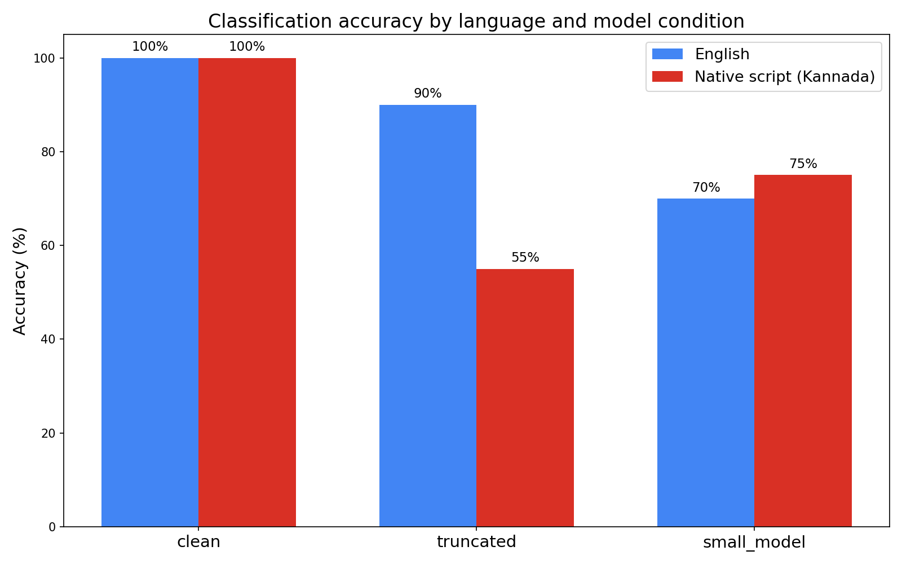
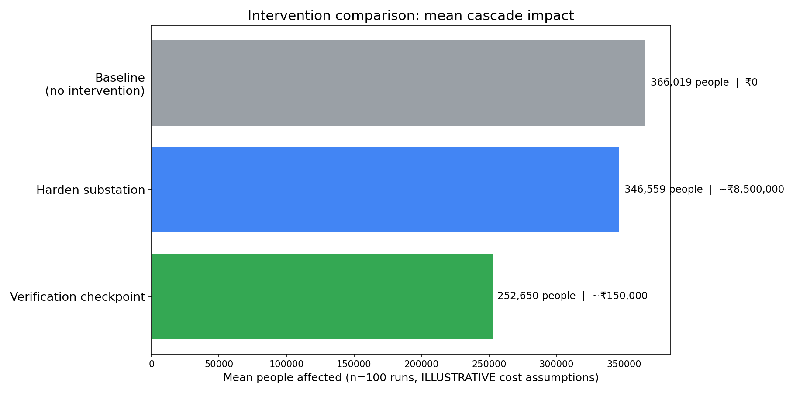

<title>Silent Cascade</title>
<link rel="preconnect" href="https://fonts.googleapis.com">
<link rel="stylesheet" href="https://fonts.googleapis.com/css2?family=Barlow+Condensed:wght@500;700&family=IBM+Plex+Mono:wght@400;500;600&family=IBM+Plex+Sans:wght@400;500;600&display=swap">
<style>
  :root {
    --ground: #0f1216;
    --surface: #171b21;
    --surface-2: #1d222a;
    --border: #262b33;
    --border-strong: #343b46;
    --ink: #e8eaed;
    --ink-2: #cfd2d6;
    --muted: #9aa0a6;
    --dim: #6b7280;
    --red: #d93025;
    --amber: #f5a623;
    --green: #34a853;
    --blue: #4285f4;
    --display: "Barlow Condensed", "Arial Narrow", Impact, sans-serif;
    --mono: "IBM Plex Mono", "SF Mono", Consolas, monospace;
    --sans: "IBM Plex Sans", "Segoe UI", Roboto, Arial, sans-serif;
    --w: 1120px;
    --ease: cubic-bezier(.22,.61,.36,1);
  }
  * { box-sizing: border-box; }
  html { scroll-behavior: smooth; }
  body {
    margin: 0;
    background: var(--ground);
    color: var(--ink);
    font-family: var(--sans);
    font-size: 16px;
    line-height: 1.55;
    -webkit-font-smoothing: antialiased;
  }
  a { color: var(--blue); }
  h1, h2, h3 { margin: 0; text-wrap: balance; }
  p { margin: 0; }
  .wrap { width: min(var(--w), calc(100% - 48px)); margin: 0 auto; }
  .mono { font-family: var(--mono); }
  .tnum { font-variant-numeric: tabular-nums; }

  /* ---------- hero ---------- */
  .hero {
    position: relative;
    min-height: 88vh;
    display: grid;
    place-items: center;
    overflow: hidden;
    border-bottom: 1px solid var(--border);
    isolation: isolate;
  }
  .hero canvas {
    position: absolute; inset: 0;
    width: 100%; height: 100%;
    z-index: -1;
    opacity: .55;
  }
  .hero::after {
    content: "";
    position: absolute; inset: 0; z-index: -1;
    background:
      radial-gradient(ellipse 70% 60% at 50% 55%, rgba(15,18,22,0) 0%, rgba(15,18,22,.85) 100%),
      linear-gradient(180deg, rgba(15,18,22,.2), rgba(15,18,22,1));
  }
  .hero-inner { text-align: center; padding: 96px 0 72px; max-width: 860px; }
  .eyebrow {
    font-family: var(--mono);
    font-size: 12px;
    letter-spacing: .18em;
    text-transform: uppercase;
    color: var(--muted);
  }
  .hero .eyebrow { display: inline-flex; gap: 14px; align-items: center; }
  .eyebrow .dot { width: 6px; height: 6px; border-radius: 50%; background: var(--red); box-shadow: 0 0 10px var(--red); }
  .title {
    font-family: var(--display);
    font-weight: 700;
    font-size: clamp(64px, 12vw, 148px);
    line-height: .92;
    letter-spacing: .08em;
    margin: 18px 0 26px;
    color: var(--ink);
  }
  .title span { color: var(--red); }
  .subhead {
    font-size: clamp(17px, 2vw, 21px);
    line-height: 1.5;
    color: var(--ink-2);
    min-height: 3.2em;
    max-width: 62ch;
    margin: 0 auto;
  }
  .subhead .caret {
    display: inline-block; width: 2px; height: 1.05em; background: var(--red);
    vertical-align: -0.15em; margin-left: 2px;
    animation: blink 1s steps(2) infinite;
  }
  @keyframes blink { 50% { opacity: 0; } }
  .hero-meta {
    margin-top: 40px;
    display: flex; gap: 28px; justify-content: center; flex-wrap: wrap;
    font-family: var(--mono); font-size: 12px; color: var(--dim); letter-spacing: .06em;
  }
  .hero-meta b { color: var(--muted); font-weight: 500; }

  /* ---------- sections ---------- */
  section.band { padding: 88px 0; border-bottom: 1px solid var(--border); }
  section.band:last-of-type { border-bottom: 0; }
  .band-head { display: grid; grid-template-columns: 96px 1fr; gap: 24px; align-items: start; margin-bottom: 36px; }
  .band-num {
    font-family: var(--mono); font-size: 13px; color: var(--dim); letter-spacing: .12em; padding-top: 10px;
    border-top: 1px solid var(--border-strong);
  }
  .band-title {
    font-family: var(--display); font-weight: 700; font-size: clamp(34px, 5vw, 52px);
    letter-spacing: .02em; line-height: 1; text-transform: uppercase;
  }
  .band-lede { color: var(--muted); max-width: 64ch; margin-top: 12px; font-size: 17px; }
  @media (max-width: 640px) { .band-head { grid-template-columns: 1fr; gap: 8px; } }

  .caption {
    font-family: var(--mono); font-size: 13.5px; line-height: 1.6; color: var(--ink-2);
    border-left: 2px solid var(--border-strong); padding-left: 14px; max-width: 70ch;
  }
  .caption strong { color: var(--ink); font-weight: 600; }
  .tag {
    display: inline-flex; align-items: center; gap: 8px;
    font-family: var(--mono); font-size: 11.5px; letter-spacing: .06em; text-transform: uppercase;
    color: var(--muted); border: 1px solid var(--border-strong); border-radius: 999px; padding: 5px 11px;
  }
  .tag .dot { width: 6px; height: 6px; border-radius: 50%; background: var(--amber); }

  /* ---------- reveal motion ---------- */
  .reveal.in { animation: rise .8s var(--ease) both; }
  @keyframes rise { from { opacity: 0; transform: translateY(18px); } to { opacity: 1; transform: none; } }
  .stagger.in > * { animation: rise .7s var(--ease) both; }
  .stagger.in > *:nth-child(1) { animation-delay: .00s }
  .stagger.in > *:nth-child(2) { animation-delay: .10s }
  .stagger.in > *:nth-child(3) { animation-delay: .20s }
  .stagger.in > *:nth-child(4) { animation-delay: .30s }
  .stagger.in > *:nth-child(5) { animation-delay: .40s }
  .stagger.in > *:nth-child(6) { animation-delay: .50s }
  .stagger.in > *:nth-child(7) { animation-delay: .60s }

  /* ---------- section 1: flow ---------- */
  .flow {
    display: grid;
    grid-template-columns: repeat(7, 1fr);
    gap: 0;
    position: relative;
    margin-top: 8px;
  }
  .flow-step { position: relative; padding: 0 14px 0 0; }
  .flow-step + .flow-step { padding-left: 14px; }
  .flow-step .k {
    font-family: var(--mono); font-size: 11px; letter-spacing: .1em; color: var(--dim); text-transform: uppercase;
    display: block; margin-bottom: 8px;
  }
  .flow-step .node {
    width: 12px; height: 12px; border-radius: 50%;
    border: 2px solid var(--border-strong); background: var(--surface);
    margin-bottom: 14px; position: relative; z-index: 2;
    transition: background .5s, border-color .5s, box-shadow .5s;
  }
  .flow-step .t { font-size: 15px; line-height: 1.35; color: var(--ink-2); }
  .flow-step .s { font-family: var(--mono); font-size: 11.5px; color: var(--muted); margin-top: 6px; line-height: 1.4; }
  .flow-line {
    position: absolute; left: 6px; right: 6px; top: 27px; height: 2px; background: var(--border);
    overflow: hidden;
  }
  .flow-line::after {
    content: ""; position: absolute; inset: 0; background: linear-gradient(90deg, var(--blue) 0 60%, var(--red));
    transform: scaleX(0); transform-origin: left; transition: transform 2.6s var(--ease);
  }
  .flow.lit .flow-line::after { transform: scaleX(1); }
  .flow.lit .flow-step .node { border-color: var(--blue); background: var(--blue); box-shadow: 0 0 10px rgba(66,133,244,.6); }
  /* .flow-line is child 1, so steps are children 2..8 */
  .flow.lit .flow-step:nth-child(3) .node { transition-delay: .35s }
  .flow.lit .flow-step:nth-child(4) .node { transition-delay: .7s }
  .flow.lit .flow-step:nth-child(5) .node { transition-delay: 1.05s }
  .flow.lit .flow-step:nth-child(6) .node { transition-delay: 1.4s }
  .flow.lit .flow-step:nth-child(7) .node { transition-delay: 1.75s }
  .flow.lit .flow-step:nth-child(8) .node { transition-delay: 2.1s }
  .flow.lit .flow-step.bad .node { border-color: var(--red); background: var(--red); box-shadow: 0 0 12px rgba(217,48,37,.7); }
  @media (max-width: 900px) {
    .flow { grid-template-columns: 1fr; gap: 18px; }
    .flow-line { display: none; }
    .flow-step, .flow-step + .flow-step { padding: 0 0 0 26px; }
    .flow-step .node { position: absolute; left: 0; top: 22px; }
  }

  /* ---------- section 2: simulator ---------- */
  .bezel {
    background: #0a0c0f;
    border: 1px solid var(--border-strong);
    border-radius: 14px;
    padding: 14px;
    box-shadow:
      0 0 0 1px rgba(0,0,0,.6),
      0 30px 80px rgba(0,0,0,.55),
      0 0 60px rgba(217,48,37,.10);
    position: relative;
  }
  .bezel-bar {
    display: flex; align-items: center; justify-content: space-between;
    font-family: var(--mono); font-size: 11.5px; color: var(--muted); letter-spacing: .08em;
    padding: 2px 6px 12px;
  }
  .bezel-bar .live { display: inline-flex; align-items: center; gap: 8px; color: var(--red); }
  .bezel-bar .live i { width: 7px; height: 7px; border-radius: 50%; background: var(--red); animation: breathe 2.2s ease-in-out infinite; }
  .bezel img { display: block; width: 100%; height: auto; border-radius: 6px; background: #fff; }
  .mapwrap { position: relative; border-radius: 6px; overflow: hidden; background: #0b0d10; aspect-ratio: 4 / 3; touch-action: none; }
  .mapwrap canvas { display: block; width: 100%; height: 100%; cursor: grab; }
  .mapwrap canvas.drag { cursor: grabbing; }
  .hud {
    position: absolute; left: 14px; top: 14px; display: grid; gap: 6px; min-width: 210px;
    background: rgba(15,18,22,.82); border: 1px solid var(--border-strong); border-radius: 8px; padding: 12px 14px;
    font-family: var(--mono); backdrop-filter: blur(4px); pointer-events: none;
  }
  .hud div { display: flex; justify-content: space-between; gap: 18px; align-items: baseline; font-size: 12px; }
  .hud .k { color: var(--muted); font-size: 10.5px; letter-spacing: .08em; text-transform: uppercase; }
  .hud b { font-weight: 600; color: var(--ink); font-size: 14px; }
  .hud .hud-t b { font-size: 22px; color: var(--red); }
  .hud #hud-p { color: var(--red); }
  .map-ctl {
    position: absolute; left: 14px; right: 14px; bottom: 14px; display: flex; gap: 10px; align-items: center; flex-wrap: wrap;
    background: rgba(15,18,22,.85); border: 1px solid var(--border-strong); border-radius: 8px; padding: 8px 10px; backdrop-filter: blur(4px);
  }
  .mbtn { font-family: var(--mono); font-size: 12px; color: #0f1216; background: var(--ink); border: 0; border-radius: 6px; padding: 7px 12px; cursor: pointer; font-weight: 600; white-space: nowrap; }
  .mbtn.ghost { background: transparent; color: var(--ink-2); border: 1px solid var(--border-strong); font-weight: 500; }
  .mbtn:focus-visible, #m-scrub:focus-visible { outline: 2px solid var(--blue); outline-offset: 2px; }
  #m-scrub { flex: 1; min-width: 140px; accent-color: var(--red); height: 4px; }
  .seg.speed button { padding: 6px 10px; font-size: 11px; }
  .attrib { position: absolute; right: 10px; top: 10px; font-family: var(--mono); font-size: 10px; color: rgba(232,234,237,.55); background: rgba(15,18,22,.6); padding: 3px 7px; border-radius: 4px; pointer-events: none; }
  @media (max-width: 640px) { .hud { min-width: 0; padding: 8px 10px; } .hud div { font-size: 11px; } .hud .hud-t b { font-size: 18px; } .attrib { display: none; } }
  .mtip { position: absolute; pointer-events: none; display: grid; gap: 2px; background: rgba(15,18,22,.92); border: 1px solid var(--border-strong); border-radius: 6px; padding: 8px 10px; font-family: var(--mono); font-size: 11px; color: var(--ink-2); max-width: 180px; }
  .mtip b { color: var(--ink); font-weight: 600; font-size: 12px; }
  .mtip .bad { color: var(--red); font-weight: 600; } .mtip .ov { color: var(--amber); } .mtip .ok { color: var(--muted); }
  .bezel-legend { display: flex; gap: 22px; flex-wrap: wrap; padding: 12px 6px 2px; font-family: var(--mono); font-size: 11.5px; color: var(--muted); }
  .bezel-legend span { display: inline-flex; align-items: center; gap: 8px; }
  .sw { width: 10px; height: 10px; border-radius: 50%; display: inline-block; border: 1px solid rgba(0,0,0,.4); }
  .sw.sq { border-radius: 2px; }
  .sw.plus { border: 0; position: relative; width: 12px; height: 12px; }
  .sw.plus::before, .sw.plus::after { content: ""; position: absolute; background: var(--muted); }
  .sw.plus::before { left: 5px; top: 0; width: 2px; height: 12px; }
  .sw.plus::after { top: 5px; left: 0; width: 12px; height: 2px; }

  .stats {
    display: grid; grid-template-columns: repeat(4, 1fr); gap: 1px;
    background: var(--border); border: 1px solid var(--border); border-radius: 10px; overflow: hidden;
    margin: 28px 0;
  }
  .stat { background: var(--surface); padding: 20px 22px; }
  .stat .l { font-family: var(--mono); font-size: 11.5px; letter-spacing: .1em; text-transform: uppercase; color: var(--muted); }
  .stat .v { font-family: var(--mono); font-weight: 600; font-size: 34px; line-height: 1.1; margin-top: 8px; color: var(--ink); }
  .stat .u { font-family: var(--mono); font-size: 12px; color: var(--dim); margin-top: 4px; }
  @media (max-width: 760px) { .stats { grid-template-columns: repeat(2, 1fr); } }

  .impact {
    display: grid; grid-template-columns: 1.2fr 1fr; gap: 28px; align-items: start; margin-top: 8px;
  }
  @media (max-width: 860px) { .impact { grid-template-columns: 1fr; } }
  .impact-big { border: 1px solid var(--border-strong); border-radius: 12px; padding: 22px 24px; background: var(--surface); }
  .impact-big .l { font-family: var(--mono); font-size: 11.5px; letter-spacing: .1em; text-transform: uppercase; color: var(--muted); }
  .impact-big .v { font-family: var(--mono); font-weight: 600; font-size: clamp(44px, 6vw, 64px); line-height: 1; margin-top: 10px; color: var(--red); text-shadow: 0 0 22px rgba(217,48,37,.35); }
  .impact-big .row { display: flex; gap: 28px; margin-top: 18px; flex-wrap: wrap; }
  .impact-big .row div { font-family: var(--mono); font-size: 13px; color: var(--muted); }
  .impact-big .row b { color: var(--ink); font-weight: 600; display: block; font-size: 22px; margin-bottom: 2px; }

  /* ---------- section 3: split ---------- */
  .split { display: grid; grid-template-columns: 1.15fr 1fr; gap: 26px; align-items: stretch; }
  @media (max-width: 900px) { .split { grid-template-columns: 1fr; } }
  .panel-ok {
    background: var(--surface); border: 1px solid var(--border); border-radius: 12px; padding: 18px 20px;
    box-shadow: 0 0 0 1px rgba(52,168,83,.12), 0 0 40px rgba(52,168,83,.10);
  }
  .panel-ok .hdr { display: flex; justify-content: space-between; align-items: baseline; margin-bottom: 14px; }
  .panel-ok .hdr h3 { font-family: var(--sans); font-size: 15px; font-weight: 600; }
  .panel-ok .hdr span { font-family: var(--mono); font-size: 11px; color: var(--dim); letter-spacing: .06em; }
  .m-grid { display: grid; grid-template-columns: repeat(2, 1fr); gap: 10px; }
  .m-card { background: var(--surface-2); border: 1px solid var(--border); border-radius: 8px; padding: 12px 14px; }
  .m-card .l { font-size: 12px; color: var(--muted); }
  .m-card .v { font-family: var(--mono); font-size: 20px; font-weight: 600; display: flex; align-items: center; gap: 8px; margin-top: 3px; }
  .gdot { width: 8px; height: 8px; border-radius: 50%; background: var(--green); box-shadow: 0 0 8px rgba(52,168,83,.8); display: inline-block; }
  .m-card svg { display: block; margin-top: 8px; width: 100%; height: 26px; }
  .svc { margin-top: 12px; border-top: 1px solid var(--border); }
  .svc div { display: flex; align-items: center; gap: 10px; padding: 8px 2px; border-bottom: 1px solid var(--border); font-family: var(--mono); font-size: 12.5px; }
  .svc div:last-child { border-bottom: 0; }
  .svc span:nth-child(2) { flex: 1; color: var(--ink-2); }
  .svc span:nth-child(3) { color: var(--green); font-size: 10.5px; letter-spacing: .08em; text-transform: uppercase; }

  .panel-bad {
    background: linear-gradient(180deg, rgba(217,48,37,.08), rgba(217,48,37,.02)), var(--surface);
    border: 1px solid rgba(217,48,37,.55); border-radius: 12px; padding: 22px 24px;
    display: flex; flex-direction: column; gap: 16px; justify-content: center;
    animation: pulse 3.2s ease-in-out infinite;
  }
  @keyframes pulse {
    0%, 100% { box-shadow: 0 0 0 1px rgba(217,48,37,.15), 0 0 22px rgba(217,48,37,.18); }
    50%      { box-shadow: 0 0 0 1px rgba(217,48,37,.35), 0 0 48px rgba(217,48,37,.32); }
  }
  @keyframes breathe { 0%,100% { opacity: .55; } 50% { opacity: 1; } }
  .panel-bad .hdr { display: flex; justify-content: space-between; align-items: baseline; }
  .panel-bad .hdr h3 { font-size: 15px; font-weight: 600; color: var(--red); }
  .panel-bad .hdr span { font-family: var(--mono); font-size: 11px; color: var(--muted); letter-spacing: .06em; }
  .trace { display: grid; gap: 10px; }
  .trace div {
    display: grid; grid-template-columns: 88px 1fr; gap: 12px; align-items: baseline;
    font-family: var(--mono); font-size: 13px; padding: 9px 0; border-top: 1px solid rgba(217,48,37,.2);
  }
  .trace div:last-child { border-bottom: 1px solid rgba(217,48,37,.2); }
  .trace .k { color: var(--muted); font-size: 11px; letter-spacing: .08em; text-transform: uppercase; }
  .trace .bad { color: var(--red); font-weight: 600; }
  .trace .ok { color: var(--green); }
  .kn { font-family: var(--sans); font-size: 14.5px; line-height: 1.55; color: var(--ink-2); min-height: 3.1em; }
  .kn .cut { color: var(--dim); text-decoration: line-through; text-decoration-color: rgba(217,48,37,.6); }
  .kn .mark { background: rgba(66,133,244,.18); border-bottom: 1px solid var(--blue); border-radius: 2px; padding: 0 1px; }
  .kn .mark.wrong { background: rgba(217,48,37,.18); border-bottom-color: var(--red); }
  .contrast-cap { margin-top: 26px; }
  .controls { display: grid; gap: 10px; }
  .ctl { display: grid; gap: 6px; font-family: var(--mono); font-size: 11px; letter-spacing: .08em; text-transform: uppercase; color: var(--muted); }
  .ctl select {
    font-family: var(--sans); font-size: 13.5px; color: var(--ink); background: var(--surface-2);
    border: 1px solid var(--border-strong); border-radius: 8px; padding: 9px 10px; width: 100%;
  }
  .ctl select:focus-visible { outline: 2px solid var(--blue); outline-offset: 1px; }
  .seg { display: inline-flex; border: 1px solid var(--border-strong); border-radius: 8px; overflow: hidden; background: var(--surface-2); width: fit-content; }
  .seg button {
    font-family: var(--mono); font-size: 12px; letter-spacing: .04em; color: var(--muted);
    background: transparent; border: 0; padding: 8px 14px; cursor: pointer; border-right: 1px solid var(--border-strong);
  }
  .seg button:last-child { border-right: 0; }
  .seg button.on { color: var(--ink); background: var(--border-strong); }
  .seg button:focus-visible { outline: 2px solid var(--blue); outline-offset: -2px; }
  .seg button[data-cond]:not([data-cond="clean"]).on { color: var(--red); background: rgba(217,48,37,.16); }
  .scores { display: grid; gap: 5px; }
  .scores div { display: grid; grid-template-columns: 170px 1fr 22px; gap: 10px; align-items: center; font-family: var(--mono); font-size: 11.5px; color: var(--muted); }
  .scores .bar { height: 6px; background: var(--border); border-radius: 3px; overflow: hidden; }
  .scores .bar i { display: block; height: 100%; background: var(--blue); width: 0; transition: width .5s var(--ease); border-radius: 3px; }
  .scores div.hit { color: var(--ink); }
  .scores div.win .bar i { background: var(--green); }
  .scores div.win.wrong .bar i { background: var(--red); }
  .scores .n { text-align: right; color: var(--ink-2); }
  .trace .bad { color: var(--red); font-weight: 600; }
  .trace .unp { color: var(--amber); font-weight: 600; }
  .reqlog { font-size: 11px; color: var(--dim); line-height: 1.7; max-height: 5.2em; overflow: hidden; border-top: 1px solid rgba(217,48,37,.2); padding-top: 8px; }
  .reqlog b { color: var(--green); font-weight: 500; }
  @media (max-width: 480px) { .scores div { grid-template-columns: 120px 1fr 22px; } }
  .segrow { display: flex; gap: 10px; flex-wrap: wrap; }
  .seg.engine button.on[data-eng="claude"] { color: var(--green); background: rgba(52,168,83,.16); }
  .model { display: grid; gap: 10px; border: 1px solid var(--border-strong); border-radius: 10px; padding: 12px 14px; background: rgba(15,18,22,.5); }
  .model .k { font-family: var(--mono); font-size: 11px; letter-spacing: .08em; text-transform: uppercase; color: var(--muted); display: flex; justify-content: space-between; }
  .model .k span { text-transform: none; letter-spacing: 0; color: var(--dim); }
  .model .raw { font-family: var(--mono); font-size: 13.5px; color: var(--ink); min-height: 1.4em; white-space: pre-wrap; word-break: break-word; }
  .model .raw.wait { color: var(--muted); animation: breathe 1.4s ease-in-out infinite; }
  .btn {
    font-family: var(--mono); font-size: 12.5px; letter-spacing: .04em; color: #0f1216; background: var(--green);
    border: 0; border-radius: 8px; padding: 10px 14px; cursor: pointer; font-weight: 600;
  }
  .btn.ghost { background: transparent; color: var(--ink-2); border: 1px solid var(--border-strong); font-weight: 500; }
  .btn:disabled { opacity: .5; cursor: default; }
  .btn:focus-visible { outline: 2px solid var(--blue); outline-offset: 2px; }
  .grid6 { display: grid; grid-template-columns: 110px 1fr 1fr; gap: 1px; background: var(--border); border: 1px solid var(--border); border-radius: 8px; overflow: hidden; font-family: var(--mono); font-size: 11.5px; }
  .grid6 > div { background: var(--surface); padding: 7px 9px; color: var(--ink-2); }
  .grid6 > div.h { color: var(--muted); font-size: 10.5px; letter-spacing: .08em; text-transform: uppercase; }
  .grid6 > div.ok { color: var(--green); }
  .grid6 > div.bad { color: var(--red); font-weight: 600; }
  .grid6 > div.unp { color: var(--amber); }
  .grid6 > div.wait { color: var(--dim); }
  .model .note { font-family: var(--mono); font-size: 11px; color: var(--dim); line-height: 1.5; }

  /* ---------- section 4/5: figures ---------- */
  .figure { background: var(--surface); border: 1px solid var(--border); border-radius: 12px; padding: 16px; }
  .figure img { display: block; width: 100%; height: auto; border-radius: 6px; background: #fff; }
  .figure.grow img { clip-path: inset(100% 0 0 0); transition: clip-path 1.6s var(--ease); }
  .figure.grow.in img { clip-path: inset(0 0 0 0); }
  .fig-head { display: flex; justify-content: space-between; align-items: baseline; margin-bottom: 12px; font-family: var(--mono); font-size: 11.5px; letter-spacing: .08em; text-transform: uppercase; color: var(--muted); }

  .acc { display: grid; grid-template-columns: 1.4fr 1fr; gap: 26px; align-items: start; }
  @media (max-width: 900px) { .acc { grid-template-columns: 1fr; } }
  table.res { width: 100%; border-collapse: collapse; font-family: var(--mono); font-size: 13.5px; }
  table.res th, table.res td { text-align: left; padding: 11px 10px; border-bottom: 1px solid var(--border); }
  table.res th { font-weight: 500; color: var(--muted); font-size: 11.5px; letter-spacing: .08em; text-transform: uppercase; }
  table.res td:not(:first-child), table.res th:not(:first-child) { text-align: right; }
  table.res td.gap { color: var(--red); font-weight: 600; }
  table.res td.inv { color: var(--amber); }
  .swatch { display: inline-block; width: 9px; height: 9px; border-radius: 2px; margin-right: 8px; vertical-align: 0; }

  .tiles { display: grid; grid-template-columns: repeat(3, 1fr); gap: 16px; margin: 26px 0; }
  @media (max-width: 800px) { .tiles { grid-template-columns: 1fr; } }
  .tile { background: var(--surface); border: 1px solid var(--border); border-radius: 12px; padding: 22px 22px 18px; position: relative; }
  .tile .l { font-family: var(--mono); font-size: 11.5px; letter-spacing: .1em; text-transform: uppercase; color: var(--muted); }
  .tile .v { font-family: var(--mono); font-weight: 600; font-size: clamp(34px, 4.2vw, 46px); line-height: 1.05; margin-top: 10px; }
  .tile .u { font-family: var(--mono); font-size: 12px; color: var(--dim); margin-top: 2px; }
  .tile .cost { margin-top: 14px; display: inline-flex; align-items: center; gap: 8px; font-family: var(--mono); font-size: 12.5px; color: var(--ink-2); border-top: 1px solid var(--border); padding-top: 12px; width: 100%; }
  .tile .cost b { font-weight: 600; color: var(--ink); }
  .tile .delta { font-family: var(--mono); font-size: 12px; margin-left: auto; color: var(--muted); }
  .tile.win { border-color: rgba(52,168,83,.7); box-shadow: 0 0 0 1px rgba(52,168,83,.25), 0 0 44px rgba(52,168,83,.16); }
  .tile.win .v { color: var(--green); }
  .tile.win .delta { color: var(--green); }
  .tile.base .v { color: var(--muted); }
  .tile.hard .v { color: var(--blue); }

  /* ---------- section 6: honesty ---------- */
  details.honesty { background: var(--surface); border: 1px solid var(--border); border-radius: 12px; }
  details.honesty summary {
    cursor: pointer; list-style: none; padding: 18px 22px; display: flex; align-items: center; gap: 14px;
    font-family: var(--mono); font-size: 13px; letter-spacing: .06em;
  }
  details.honesty summary::-webkit-details-marker { display: none; }
  details.honesty summary::after { content: "+"; margin-left: auto; color: var(--muted); font-size: 18px; }
  details.honesty[open] summary::after { content: "–"; }
  details.honesty summary:focus-visible { outline: 2px solid var(--blue); outline-offset: -2px; border-radius: 12px; }
  .prov { border-top: 1px solid var(--border); padding: 6px 22px 18px; }
  .prov div { display: grid; grid-template-columns: 1.3fr 1fr 1fr; gap: 14px; padding: 12px 0; border-bottom: 1px solid var(--border); font-size: 14px; align-items: center; }
  .prov div:last-child { border-bottom: 0; }
  .prov .k { color: var(--ink-2); }
  .prov .src { font-family: var(--mono); font-size: 12px; color: var(--muted); }
  .pill { justify-self: start; font-family: var(--mono); font-size: 11px; letter-spacing: .08em; text-transform: uppercase; padding: 4px 10px; border-radius: 999px; border: 1px solid var(--border-strong); }
  .pill.real { color: var(--green); border-color: rgba(52,168,83,.5); }
  .pill.meas { color: var(--blue); border-color: rgba(66,133,244,.5); }
  .pill.inf { color: var(--amber); border-color: rgba(245,166,35,.5); }
  .pill.syn { color: var(--muted); }
  .pill.sim { color: var(--ink-2); border-color: var(--border-strong); }
  @media (max-width: 640px) { .prov div { grid-template-columns: 1fr; gap: 6px; } }

  footer { padding: 40px 0 56px; }
  .foot { display: flex; justify-content: space-between; align-items: center; gap: 20px; flex-wrap: wrap; }
  .sdg {
    display: inline-flex; align-items: center; gap: 12px; padding: 10px 14px; border-radius: 10px;
    background: #fd9d24; color: #111; font-family: var(--display); font-weight: 700; letter-spacing: .04em; font-size: 18px;
    box-shadow: 0 0 30px rgba(253,157,36,.25);
  }
  .sdg small { font-family: var(--mono); font-weight: 500; font-size: 11px; letter-spacing: .1em; text-transform: uppercase; opacity: .8; }
  .foot p { font-family: var(--mono); font-size: 12px; color: var(--dim); letter-spacing: .04em; }
  .quote { font-family: var(--display); font-size: clamp(26px, 3.6vw, 40px); font-weight: 500; line-height: 1.15; max-width: 22ch; color: var(--ink); margin-bottom: 36px; letter-spacing: .01em; }
  .quote em { color: var(--red); font-style: normal; }

  @media (prefers-reduced-motion: reduce) {
    .reveal.in, .stagger.in > *, .panel-bad, .bezel-bar .live i, .subhead .caret { animation: none !important; }
    .flow-line::after, .flow-step .node, .figure.grow img { transition: none !important; }
    .figure.grow img { clip-path: none; }
    html { scroll-behavior: auto; }
  }
</style>

<!-- ================= HERO ================= -->
<header class="hero">
  <canvas id="mesh" aria-hidden="true"></canvas>
  <div class="hero-inner wrap">
    <div class="eyebrow"><span class="dot"></span> Manipal Hackathon · Cascading Failure · SDG 11 <span class="dot" style="background:var(--muted);box-shadow:none"></span></div>
    <h1 class="title">SILENT<br><span>CASCADE</span></h1>
    <p class="subhead" id="subhead">Cities monitor every physical asset. Nothing monitors the AI that decides which asset gets fixed first — and it degrades silently, worst on the citizens least able to escalate.</p>
    <div class="hero-meta">
      <span><b>Network</b> Bhopal, MP · OpenStreetMap</span>
      <span><b>Domain</b> Disaster Resilience &amp; Critical Infrastructure</span>
      <span><b>Theme</b> The Butterfly Effect</span>
    </div>
  </div>
</header>

<!-- ================= 1 · THE PROBLEM ================= -->
<section class="band">
  <div class="wrap">
    <div class="band-head reveal">
      <div class="band-num">01 / 06</div>
      <div>
        <h2 class="band-title">A citizen reports a sparking transformer.</h2>
        <p class="band-lede">Voice complaint, regional language, evening. Fourteen days later it failed. Nothing in the chain below crashed — every step returned a valid answer.</p>
      </div>
    </div>
    <div class="flow" id="flow">
      <div class="flow-line"></div>
      <div class="flow-step"><span class="k">Intake</span><div class="node"></div><div class="t">Citizen complaint</div><div class="s">Kannada, voice → text</div></div>
      <div class="flow-step"><span class="k">AI layer</span><div class="node"></div><div class="t">Classification &amp; routing</div><div class="s">department + urgency</div></div>
      <div class="flow-step"><span class="k">Ops</span><div class="node"></div><div class="t">Dispatch queue</div><div class="s">position set by category</div></div>
      <div class="flow-step"><span class="k">Delay</span><div class="node"></div><div class="t">Repair delay</div><div class="s">wrong SLA, wrong crew</div></div>
      <div class="flow-step bad"><span class="k">T+14d</span><div class="node"></div><div class="t">Equipment fails</div><div class="s">transformer trips</div></div>
      <div class="flow-step bad"><span class="k">Cascade</span><div class="node"></div><div class="t">Power &amp; water</div><div class="s">load shed → neighbours trip</div></div>
      <div class="flow-step bad"><span class="k">Impact</span><div class="node"></div><div class="t">Households dry, hospital on generator</div><div class="s">buffers are hours, not booleans</div></div>
    </div>
  </div>
</section>

<!-- ================= 2 · THE SIMULATOR ================= -->
<section class="band">
  <div class="wrap">
    <div class="band-head reveal">
      <div class="band-num">02 / 06</div>
      <div>
        <h2 class="band-title">The network we modelled</h2>
        <p class="band-lede">Real substations, hospitals and water pumps at real coordinates. A load-redistribution cascade, stepped every two hours, run on the actual geography of Bhopal.</p>
      </div>
    </div>

    <div class="bezel reveal">
      <div class="bezel-bar">
        <span class="live"><i></i> SCENARIO A · EQUIPMENT FAILURE · sub_003</span>
        <span>2 h / step · load redistribution · trip &gt; capacity</span>
      </div>
      <div class="mapwrap" id="mapwrap">
        <canvas id="map" aria-label="Interactive map of Bhopal: substations, hospitals and pumps turning red as the cascade spreads. Scroll to zoom, drag to pan." role="img"></canvas>
        <div class="hud" id="hud">
          <div class="hud-t"><span class="k">Elapsed</span><b id="hud-h">T+0.0h</b></div>
          <div><span class="k">People affected</span><b id="hud-p" class="tnum">13,697</b></div>
          <div><span class="k">Hospitals on generator</span><b id="hud-hosp" class="tnum">0</b></div>
          <div><span class="k">Wards without water</span><b id="hud-pump" class="tnum">0</b></div>
          <div><span class="k">Substations tripped</span><b id="hud-sub" class="tnum">1</b></div>
        </div>
        <div class="map-ctl">
          <button type="button" class="mbtn" id="m-play" aria-label="Play or pause">▶ Play</button>
          <button type="button" class="mbtn ghost" id="m-restart" aria-label="Restart">↺</button>
          <input type="range" id="m-scrub" min="0" max="9" step="0.01" value="0" aria-label="Cascade timestep">
          <div class="seg speed" role="group" aria-label="Playback speed">
            <button type="button" data-spd="4" class="on">slow</button>
            <button type="button" data-spd="2">normal</button>
            <button type="button" data-spd="0.8">fast</button>
          </div>
          <button type="button" class="mbtn ghost" id="m-fit" aria-label="Fit network">⤢ fit</button>
        </div>
        <div class="attrib">© OpenStreetMap contributors · scroll to zoom · drag to pan</div>
      </div>
      <div class="bezel-legend">
        <span><i class="sw" style="background:#9aa0a6"></i> healthy</span>
        <span><i class="sw" style="background:#f5a623"></i> overloaded &gt;90%</span>
        <span><i class="sw" style="background:#d93025"></i> failed</span>
        <span><i class="sw" style="background:#9aa0a6"></i> substation</span>
        <span><i class="sw plus"></i> hospital</span>
        <span><i class="sw sq" style="background:#9aa0a6"></i> pump</span>
      </div>
    </div>

    <div class="stats stagger">
      <div class="stat"><div class="l">Nodes</div><div class="v tnum" data-count="425">425</div><div class="u">real lat / lon</div></div>
      <div class="stat"><div class="l">Substations</div><div class="v tnum" data-count="27">27</div><div class="u">power=substation</div></div>
      <div class="stat"><div class="l">Hospitals</div><div class="v tnum" data-count="295">295</div><div class="u">8 h generator buffer</div></div>
      <div class="stat"><div class="l">Water pumps</div><div class="v tnum" data-count="103">103</div><div class="u">6 h reservoir buffer</div></div>
    </div>

    <div class="impact">
      <div class="impact-big reveal">
        <div class="l">Final state · T+16h</div>
        <div class="v tnum" data-count="680357">680,357</div>
        <div class="row">
          <div><b class="tnum" data-count="295">295</b>hospitals on generator</div>
          <div><b class="tnum" data-count="27">27</b>of 27 substations tripped</div>
          <div><b class="tnum" data-count="103">103</b>wards without water</div>
        </div>
      </div>
      <div class="reveal">
        <p class="caption">The highest-criticality substation fails. Load sheds to its three nearest neighbours; two of them trip; the cascade collapses the <strong>entire network within ~16 hours</strong>: 680,357 people affected, all 295 hospitals on generator.</p>
        <p class="caption" style="margin-top:14px">Ten of the 27 substations produce this exact outcome if they fail alone. On this grid there is no middle ground — a failure is either contained to its own feeders, or it takes the whole city.</p>
        <div style="margin-top:18px"><span class="tag"><i class="dot"></i> Edge provenance: inferred — no real feeder topology published</span></div>
      </div>
    </div>
  </div>
</section>

<!-- ================= 3 · NO ALARM FIRED ================= -->
<section class="band">
  <div class="wrap">
    <div class="band-head reveal">
      <div class="band-num">03 / 06</div>
      <div>
        <h2 class="band-title">No alarm fired</h2>
        <p class="band-lede">Complaint acknowledged. Ticket created. Status green. SLA nominally met — for the category it was assigned to.</p>
      </div>
    </div>

    <div class="split stagger">
      <div class="panel-ok">
        <div class="hdr"><h3>CivicOps Monitor</h3><span>grievance pipeline · all systems · <span id="mon-clock">updated just now</span></span></div>
        <div class="m-grid">
          <div class="m-card"><div class="l">Uptime</div><div class="v tnum"><span id="m-up">99.98%</span> <i class="gdot"></i></div><svg viewBox="0 0 160 26" preserveAspectRatio="none"><polyline id="s-up" fill="none" stroke="#34a853" stroke-width="1.6" points="0,14 12,13 24,15 36,13 48,14 60,12 72,14 84,13 96,15 108,13 120,14 132,12 144,13 160,14"/></svg></div>
          <div class="m-card"><div class="l">p50 Latency</div><div class="v tnum"><span id="m-lat">187ms</span> <i class="gdot"></i></div><svg viewBox="0 0 160 26" preserveAspectRatio="none"><polyline id="s-lat" fill="none" stroke="#34a853" stroke-width="1.6" points="0,15 12,14 24,16 36,15 48,13 60,15 72,16 84,14 96,13 108,15 120,16 132,14 144,15 160,13"/></svg></div>
          <div class="m-card"><div class="l">Error rate</div><div class="v tnum"><span id="m-err">0.01%</span> <i class="gdot"></i></div><svg viewBox="0 0 160 26" preserveAspectRatio="none"><polyline id="s-err" fill="none" stroke="#34a853" stroke-width="1.6" points="0,16 12,16 24,15 36,16 48,17 60,16 72,15 84,16 96,16 108,17 120,16 132,15 144,16 160,16"/></svg></div>
          <div class="m-card"><div class="l">Requests / min</div><div class="v tnum"><span id="m-rpm">1,240</span> <i class="gdot"></i></div><svg viewBox="0 0 160 26" preserveAspectRatio="none"><polyline id="s-rpm" fill="none" stroke="#34a853" stroke-width="1.6" points="0,13 12,15 24,12 36,14 48,16 60,13 72,12 84,15 96,14 108,12 120,15 132,13 144,14 160,12"/></svg></div>
        </div>
        <div class="svc">
          <div><i class="gdot"></i><span>intake-api</span><span>operational</span></div>
          <div><i class="gdot"></i><span>language-normaliser</span><span>operational</span></div>
          <div><i class="gdot"></i><span>classifier</span><span>operational</span></div>
          <div><i class="gdot"></i><span>urgency-scorer</span><span>operational</span></div>
          <div><i class="gdot"></i><span>router</span><span>operational</span></div>
          <div><i class="gdot"></i><span>queue-worker</span><span>operational</span></div>
        </div>
      </div>

      <div class="panel-bad" id="injector">
        <div class="hdr"><h3>Degradation injector · live</h3><span id="inj-status">HTTP 200 · 187 ms</span></div>
        <div class="controls">
          <label class="ctl"><span>Complaint</span>
            <select id="inj-id" aria-label="Choose a complaint"></select>
          </label>
          <div class="segrow">
            <div class="seg" role="group" aria-label="Language">
              <button type="button" data-lang="en" class="on">English</button>
              <button type="button" data-lang="kn">ಕನ್ನಡ</button>
            </div>
            <div class="seg" role="group" aria-label="Condition">
              <button type="button" data-cond="clean" class="on">clean</button>
              <button type="button" data-cond="truncated">truncated</button>
              <button type="button" data-cond="small_model">small model</button>
            </div>
          </div>
          <div class="seg engine" role="group" aria-label="Classifier engine" id="engine" hidden>
            <button type="button" data-eng="kw" class="on">keyword baseline</button>
            <button type="button" data-eng="claude">Claude · live</button>
          </div>
        </div>
        <p class="kn" id="inj-text"></p>
        <div class="scores" id="inj-scores"></div>
        <div class="model" id="inj-model" hidden>
          <div class="k">Model reply <span id="inj-tier"></span></div>
          <div class="raw" id="inj-raw"></div>
          <button type="button" class="btn" id="inj-run">Classify with Claude</button>
          <button type="button" class="btn ghost" id="inj-all">Run all 3 conditions × 2 languages</button>
          <div class="grid6" id="inj-grid" hidden></div>
          <div class="note" id="inj-note"></div>
        </div>
        <div class="trace">
          <div><span class="k">True dept</span><span class="ok" id="inj-true"></span></div>
          <div><span class="k">Routed to</span><span id="inj-pred"></span></div>
          <div><span class="k">Verdict</span><span id="inj-verdict"></span></div>
        </div>
        <div class="reqlog mono" id="reqlog" aria-live="polite"></div>
      </div>
    </div>

    <p class="caption contrast-cap reveal">Every dashboard says everything is fine. <strong>The thing that failed was a decision, not a server.</strong> Monitoring watches whether the AI answered — not whether it was right. Switch the condition above: every request still returns 200.</p>
  </div>
</section>

<!-- ================= 4 · IT ISN'T EQUAL ================= -->
<section class="band">
  <div class="wrap">
    <div class="band-head reveal">
      <div class="band-num">04 / 06</div>
      <div>
        <h2 class="band-title">It isn't equal</h2>
        <p class="band-lede">Twenty civic complaints, written in English and in Kannada script, routed by the same classifier under three degradation conditions. 120 classifications, all measured.</p>
      </div>
    </div>

    <div class="acc">
      <div class="figure grow reveal">
        <div class="fig-head"><span>Routing accuracy · language × condition</span><span>n = 20 per bar</span></div>
        
      </div>
      <div class="reveal">
        <table class="res tnum">
          <thead><tr><th>Condition</th><th><i class="swatch" style="background:#4285f4"></i>English</th><th><i class="swatch" style="background:#d93025"></i>Kannada</th></tr></thead>
          <tbody id="acc-body">
            <tr><td>clean</td><td>100%</td><td>100%</td></tr>
            <tr><td>truncated · 40 chars</td><td>90%</td><td class="gap">55%</td></tr>
            <tr><td>small_model</td><td>70%</td><td class="inv">75%</td></tr>
          </tbody>
        </table>
        <div style="margin-top:10px"><span class="tag" id="acc-tag"><i class="dot" style="background:var(--green)"></i> Recomputed live in this browser · 120 runs</span></div>
        <p class="caption" style="margin-top:22px">Truncation shows a real language gap: seven complaints routed correctly in English become <strong>unparseable in Kannada</strong> — including the sparking transformer and the live wire. The small-model condition did not show a gap. <strong>We report both</strong>, because we don't tune experiments to fit the pitch.</p>
        <div style="margin-top:16px"><span class="tag"><i class="dot" style="background:var(--blue)"></i> Keyword-baseline classifier · not a production LLM</span></div>
      </div>
    </div>
  </div>
</section>

<!-- ================= 5 · BUTTERFLY ================= -->
<section class="band">
  <div class="wrap">
    <div class="band-head reveal">
      <div class="band-num">05 / 06</div>
      <div>
        <h2 class="band-title">The smallest intervention</h2>
        <p class="band-lede">Same cascade engine, 100 random initiating failures, three conditions. Mean people affected per run.</p>
      </div>
    </div>

    <div class="tiles stagger">
      <div class="tile base">
        <div class="l">Baseline · no intervention</div>
        <div class="v tnum" data-count="366019">366,019</div>
        <div class="u">mean people affected</div>
        <div class="cost">cost <b>₹0</b><span class="delta">—</span></div>
      </div>
      <div class="tile hard">
        <div class="l">Harden the top substation</div>
        <div class="v tnum" data-count="346559">346,559</div>
        <div class="u">capacity × 1.5 on sub_003</div>
        <div class="cost">cost <b>~₹85 L</b><span class="delta">−5.3%</span></div>
      </div>
      <div class="tile win">
        <div class="l">One verification checkpoint</div>
        <div class="v tnum" data-count="252650">252,650</div>
        <div class="u">human review on the AI routing layer</div>
        <div class="cost">cost <b>~₹1.5 L</b><span class="delta">−31.0%</span></div>
      </div>
    </div>

    <div class="figure reveal">
      <div class="fig-head"><span>Intervention comparison · mean cascade impact</span><span>costs are illustrative assumptions</span></div>
      
    </div>
    <p class="caption reveal" style="margin-top:26px">The cheaper intervention wins by a wide margin — at roughly <strong>one-fiftieth of the cost</strong>. Let the numbers say "butterfly effect". We won't.</p>
  </div>
</section>

<!-- ================= 6 · HONESTY ================= -->
<section class="band">
  <div class="wrap">
    <div class="band-head reveal">
      <div class="band-num">06 / 06</div>
      <div>
        <h2 class="band-title">What's real, what's simulated</h2>
        <p class="band-lede">Every number above is one of three things: measured, simulated on declared assumptions, or observed from a named source. Every edge in the graph carries a provenance label.</p>
      </div>
    </div>

    <details class="honesty reveal">
      <summary><span class="gdot" style="background:var(--amber);box-shadow:0 0 8px rgba(245,166,35,.6)"></span> PROVENANCE TABLE · 9 ROWS</summary>
      <div class="prov">
        <div><span class="k">Substation locations (27)</span><span class="src">OpenStreetMap · power=substation</span><span class="pill real">Observed</span></div>
        <div><span class="k">Hospital &amp; pump locations (398)</span><span class="src">OpenStreetMap · amenity / man_made</span><span class="pill real">Observed</span></div>
        <div><span class="k">Feeder topology (grid edges)</span><span class="src">3-nearest-neighbour by haversine</span><span class="pill inf">Inferred</span></div>
        <div><span class="k">Substation capacity, load, population served</span><span class="src">config.yaml · seeded uniform draws</span><span class="pill sim">Assumed</span></div>
        <div><span class="k">Generator / reservoir buffer hours</span><span class="src">8 h · 6 h typical engineering values</span><span class="pill sim">Assumed</span></div>
        <div><span class="k">Complaint text (20 × 2 languages)</span><span class="src">hand-written, Kannada script</span><span class="pill syn">Synthetic</span></div>
        <div><span class="k">Routing accuracy by language</span><span class="src">120 classifications, keyword baseline</span><span class="pill meas">Measured</span></div>
        <div><span class="k">Cascade outcomes, criticality ranking</span><span class="src">cascade.py · deterministic, seed 42</span><span class="pill sim">Simulated</span></div>
        <div><span class="k">Intervention costs (₹)</span><span class="src">order-of-magnitude placeholders</span><span class="pill sim">Assumed</span></div>
      </div>
    </details>
  </div>
</section>

<footer>
  <div class="wrap">
    <p class="quote reveal">You cannot defend infrastructure you monitor perfectly if the thing deciding <em>what to repair</em> is invisible.</p>
    <div class="foot">
      <span class="sdg"><small>SDG</small> 11 · Sustainable Cities</span>
      <p>Silent Cascade · Manipal Hackathon Round 1 · scenario-based stress testing, not prediction</p>
    </div>
  </div>
</footer>

<script id="d2" type="application/json">{"departments":["electrical_emergency","electrical_maintenance","water_supply","drainage","roads","sanitation"],"complaints":[{"id":"c01","en":"There are sparks coming out of the transformer box on our street and it smells like burning. Please send someone immediately, it's dangerous especially with children playing nearby.","kn":"ನಮ್ಮ ಬೀದಿಯಲ್ಲಿರುವ ಟ್ರಾನ್ಸ್‌ಫಾರ್ಮರ್ ಬಾಕ್ಸ್‌ನಿಂದ ಕಿಡಿಗಳು ಹಾರುತ್ತಿವೆ ಮತ್ತು ಸುಟ್ಟ ವಾಸನೆ ಬರುತ್ತಿದೆ. ದಯವಿಟ್ಟು ತಕ್ಷಣ ಯಾರನ್ನಾದರೂ ಕಳುಹಿಸಿ, ಮಕ್ಕಳು ಹತ್ತಿರದಲ್ಲಿ ಆಡುತ್ತಿರುವುದರಿಂದ ಇದು ತುಂಬಾ ಅಪಾಯಕಾರಿ.","true":"electrical_emergency"},{"id":"c02","en":"The streetlight on our lane has been flickering for two weeks now and needs a repair visit.","kn":"ನಮ್ಮ ಗಲ್ಲಿಯ ಬೀದಿ ದೀಪವು ಎರಡು ವಾರಗಳಿಂದ ಫ್ಲಿಕರ್ ಆಗುತ್ತಿದೆ, ದುರಸ್ತಿ ಮಾಡಿಸಬೇಕಾಗಿದೆ.","true":"electrical_maintenance"},{"id":"c03","en":"A live wire has fallen onto the road after last night's storm and is lying uncovered near the bus stop. This is an emergency, please act fast.","kn":"ನಿನ್ನೆ ರಾತ್ರಿಯ ಬಿರುಗಾಳಿಯ ನಂತರ ಒಂದು ವಿದ್ಯುತ್ ತಂತಿ ರಸ್ತೆಯ ಮೇಲೆ ಬಿದ್ದಿದೆ ಮತ್ತು ಬಸ್ ನಿಲ್ದಾಣದ ಬಳಿ ಮುಚ್ಚಿಲ್ಲದೆ ಬಿದ್ದಿದೆ. ಇದು ತುರ್ತು ಪರಿಸ್ಥಿತಿ, ದಯವಿಟ್ಟು ಬೇಗ ಕ್ರಮ ತೆಗೆದುಕೊಳ್ಳಿ.","true":"electrical_emergency"},{"id":"c04","en":"Two of the four streetlights near the park are completely out and the area is dark at night.","kn":"ಪಾರ್ಕ್ ಬಳಿಯ ನಾಲ್ಕರಲ್ಲಿ ಎರಡು ಬೀದಿ ದೀಪಗಳು ಸಂಪೂರ್ಣವಾಗಿ ಆರಿ ಹೋಗಿವೆ ಮತ್ತು ರಾತ್ರಿ ಆ ಪ್ರದೇಶ ಕತ್ತಲಾಗಿದೆ.","true":"electrical_maintenance"},{"id":"c05","en":"There has been no water supply in our colony for the past three days. Please restore the connection urgently.","kn":"ನಮ್ಮ ಕಾಲೋನಿಯಲ್ಲಿ ಕಳೆದ ಮೂರು ದಿನಗಳಿಂದ ನೀರು ಪೂರೈಕೆ ಇಲ್ಲ. ದಯವಿಟ್ಟು ತುರ್ತಾಗಿ ಸಂಪರ್ಕ ಪುನಃಸ್ಥಾಪಿಸಿ.","true":"water_supply"},{"id":"c06","en":"The main pipeline near the market has burst and water is gushing onto the road, wasting a huge amount of water. This needs immediate repair.","kn":"ಮಾರುಕಟ್ಟೆ ಬಳಿಯ ಮುಖ್ಯ ಪೈಪ್‌ಲೈನ್ ಒಡೆದಿದ್ದು ನೀರು ರಸ್ತೆಯ ಮೇಲೆ ಉಕ್ಕಿ ಹರಿಯುತ್ತಿದೆ, ಇದರಿಂದ ಸಾಕಷ್ಟು ನೀರು ವ್ಯರ್ಥವಾಗುತ್ತಿದೆ. ಇದನ್ನು ತಕ್ಷಣ ದುರಸ್ತಿ ಮಾಡಬೇಕು.","true":"water_supply"},{"id":"c07","en":"The storm drain outside our house is completely blocked with garbage and water is flooding into homes during rain.","kn":"ನಮ್ಮ ಮನೆಯ ಹೊರಗಿನ ಚರಂಡಿ ಕಸದಿಂದ ಸಂಪೂರ್ಣ ಬ್ಲಾಕ್ ಆಗಿದೆ ಮತ್ತು ಮಳೆ ಬಂದಾಗ ನೀರು ಮನೆಗಳೊಳಗೆ ನುಗ್ಗುತ್ತಿದೆ.","true":"drainage"},{"id":"c08","en":"Sewage water from the drain is overflowing onto the street every evening and creating a health hazard for the whole neighbourhood, please attend urgently.","kn":"ಚರಂಡಿಯಿಂದ ಕೊಳಚೆ ನೀರು ಪ್ರತಿ ಸಂಜೆ ರಸ್ತೆಯ ಮೇಲೆ ಉಕ್ಕಿ ಹರಿಯುತ್ತಿದ್ದು, ಇಡೀ ಪ್ರದೇಶಕ್ಕೆ ಆರೋಗ್ಯ ಅಪಾಯ ಉಂಟುಮಾಡುತ್ತಿದೆ, ದಯವಿಟ್ಟು ತುರ್ತಾಗಿ ಗಮನಹರಿಸಿ.","true":"drainage"},{"id":"c09","en":"There is a large pothole in the middle of the main road that has caused two accidents this week.","kn":"ಮುಖ್ಯ ರಸ್ತೆಯ ಮಧ್ಯದಲ್ಲಿ ದೊಡ್ಡ ಗುಂಡಿ ಇದ್ದು, ಈ ವಾರ ಎರಡು ಅಪಘಾತಗಳಿಗೆ ಕಾರಣವಾಗಿದೆ.","true":"roads"},{"id":"c10","en":"The road near the junction has been dug up for cable work a month ago and never repaved, causing traffic jams daily.","kn":"ಕೇಬಲ್ ಕೆಲಸಕ್ಕಾಗಿ ಒಂದು ತಿಂಗಳ ಹಿಂದೆ ಜಂಕ್ಷನ್ ಬಳಿಯ ರಸ್ತೆಯನ್ನು ಅಗೆದಿದ್ದು, ಇನ್ನೂ ಮತ್ತೆ ಹಾಕಿಲ್ಲ, ಇದರಿಂದ ಪ್ರತಿದಿನ ಟ್ರಾಫಿಕ್ ಜಾಮ್ ಆಗುತ್ತಿದೆ.","true":"roads"},{"id":"c11","en":"Garbage has not been collected from our street for over a week and it is piling up and attracting stray animals.","kn":"ನಮ್ಮ ಬೀದಿಯಿಂದ ಒಂದು ವಾರಕ್ಕೂ ಹೆಚ್ಚು ಕಾಲ ಕಸ ಸಂಗ್ರಹಿಸಿಲ್ಲ, ಇದು ರಾಶಿಯಾಗಿ ಬೀದಿ ನಾಯಿಗಳನ್ನು ಆಕರ್ಷಿಸುತ್ತಿದೆ.","true":"sanitation"},{"id":"c12","en":"The public toilet near the bus stand is filthy and has not been cleaned in a long time.","kn":"ಬಸ್ ನಿಲ್ದಾಣದ ಬಳಿಯ ಸಾರ್ವಜನಿಕ ಶೌಚಾಲಯ ಬಹಳ ಕೊಳಕಾಗಿದ್ದು, ಬಹಳ ದಿನಗಳಿಂದ ಸ್ವಚ್ಛಗೊಳಿಸಿಲ್ಲ.","true":"sanitation"},{"id":"c13","en":"Our neighbour's compound wall has an exposed electric wire on it and it gave someone a mild shock yesterday. Please treat this as urgent.","kn":"ನಮ್ಮ ನೆರೆಹೊರೆಯವರ ಕಾಂಪೌಂಡ್ ಗೋಡೆಯ ಮೇಲೆ ತೆರೆದ ವಿದ್ಯುತ್ ತಂತಿ ಇದ್ದು, ನಿನ್ನೆ ಯಾರಿಗೋ ಸಣ್ಣ ಶಾಕ್ ಹೊಡೆದಿದೆ. ದಯವಿಟ್ಟು ಇದನ್ನು ತುರ್ತು ಎಂದು ಪರಿಗಣಿಸಿ.","true":"electrical_emergency"},{"id":"c14","en":"The electricity meter reading seems wrong and our bill has doubled this month, please send someone to check it.","kn":"ನಮ್ಮ ವಿದ್ಯುತ್ ಮೀಟರ್ ರೀಡಿಂಗ್ ತಪ್ಪಾಗಿ ಕಾಣುತ್ತಿದೆ ಮತ್ತು ಈ ತಿಂಗಳ ಬಿಲ್ ದುಪ್ಪಟ್ಟಾಗಿದೆ, ದಯವಿಟ್ಟು ಪರಿಶೀಲಿಸಲು ಯಾರನ್ನಾದರೂ ಕಳುಹಿಸಿ.","true":"electrical_maintenance"},{"id":"c15","en":"The water we are getting from the tap is muddy and smells bad, we suspect contamination.","kn":"ನಲ್ಲಿಯಿಂದ ಬರುತ್ತಿರುವ ನೀರು ಕೆಸರು ಮಿಶ್ರಿತವಾಗಿದ್ದು ಕೆಟ್ಟ ವಾಸನೆ ಬರುತ್ತಿದೆ, ಇದು ಕಲುಷಿತವಾಗಿರಬಹುದು ಎಂದು ನಮಗೆ ಅನುಮಾನವಿದೆ.","true":"water_supply"},{"id":"c16","en":"After yesterday's rain, the drainage near our apartment overflowed and mixed with the road, and now there is a bad smell everywhere.","kn":"ನಿನ್ನೆಯ ಮಳೆಯ ನಂತರ, ನಮ್ಮ ಅಪಾರ್ಟ್‌ಮೆಂಟ್ ಬಳಿಯ ಚರಂಡಿ ಉಕ್ಕಿ ರಸ್ತೆಯೊಂದಿಗೆ ಬೆರೆತಿದ್ದು, ಈಗ ಎಲ್ಲೆಡೆ ದುರ್ವಾಸನೆ ಇದೆ.","true":"drainage"},{"id":"c17","en":"The footpath tiles are broken and uneven, making it difficult and dangerous for elderly people to walk.","kn":"ಪಾದಚಾರಿ ಮಾರ್ಗದ ಟೈಲ್ಸ್ ಒಡೆದು ಅಸಮವಾಗಿದ್ದು, ಇದು ವಯಸ್ಸಾದವರಿಗೆ ನಡೆಯಲು ಕಷ್ಟ ಮತ್ತು ಅಪಾಯಕಾರಿಯಾಗಿದೆ.","true":"roads"},{"id":"c18","en":"A dead animal carcass has been lying on the roadside for two days and nobody has removed it despite complaints.","kn":"ರಸ್ತೆಬದಿಯಲ್ಲಿ ಎರಡು ದಿನಗಳಿಂದ ಸತ್ತ ಪ್ರಾಣಿಯ ಶವ ಬಿದ್ದಿದ್ದು, ದೂರು ನೀಡಿದ್ದರೂ ಯಾರೂ ಅದನ್ನು ತೆಗೆದಿಲ್ಲ.","true":"sanitation"},{"id":"c19","en":"Water pressure in our area has been extremely low for the past week, we barely get any water in the mornings.","kn":"ನಮ್ಮ ಪ್ರದೇಶದಲ್ಲಿ ಕಳೆದ ಒಂದು ವಾರದಿಂದ ನೀರಿನ ಒತ್ತಡ ತುಂಬಾ ಕಡಿಮೆಯಾಗಿದ್ದು, ಬೆಳಿಗ್ಗೆ ಬಹುತೇಕ ನೀರೇ ಬರುತ್ತಿಲ್ಲ.","true":"water_supply"},{"id":"c20","en":"A transformer near the community hall is making loud buzzing noises and sparking intermittently in the evening, residents are scared it might catch fire.","kn":"ಸಮುದಾಯ ಭವನದ ಬಳಿಯ ಟ್ರಾನ್ಸ್‌ಫಾರ್ಮರ್ ಸಂಜೆ ಜೋರಾಗಿ ಗುಂಯ್ ಎಂದು ಶಬ್ದ ಮಾಡುತ್ತಾ ಮಧ್ಯೆ ಮಧ್ಯೆ ಕಿಡಿ ಹಾರಿಸುತ್ತಿದೆ, ಬೆಂಕಿ ಹೊತ್ತಿಕೊಳ್ಳಬಹುದೆಂದು ನಿವಾಸಿಗಳು ಭಯಗೊಂಡಿದ್ದಾರೆ.","true":"electrical_emergency"}],"kw":{"full":{"en":{"electrical_emergency":["spark","sparks","sparking","live wire","shock","buzzing","burning","fire","exposed wire","exposed electric wire","emergency","dangerous"],"electrical_maintenance":["streetlight","street light","flicker","flickering","electricity meter","meter reading","bill","repair visit","dark at night","pole"],"water_supply":["water supply","no water","pipeline","burst","tap","muddy","contamination","water pressure","restore","water connection"],"drainage":["drain","drainage","storm drain","sewage","overflow","overflowing","flooding","manhole","blocked"],"roads":["pothole","footpath","pavement","traffic jam","dug up","accident","junction","uneven"],"sanitation":["garbage","trash","toilet","dead animal","carcass","stray animals","cleaned","waste"]},"kn":{"electrical_emergency":["ಕಿಡಿ","ಶಾಕ್","ವಿದ್ಯುತ್ ತಂತಿ","ಬೆಂಕಿ","ಗುಂಯ್","ಸುಟ್ಟ ವಾಸನೆ","ತುರ್ತು","ಅಪಾಯಕಾರಿ"],"electrical_maintenance":["ಬೀದಿ ದೀಪ","ಫ್ಲಿಕರ್","ಮೀಟರ್","ಬಿಲ್","ದುರಸ್ತಿ","ಆರಿ ಹೋಗಿ"],"water_supply":["ನೀರು ಪೂರೈಕೆ","ಪೈಪ್‌ಲೈನ್","ಪೈಪ್","ಒಡೆದ","ಕೆಸರು","ಒತ್ತಡ","ಕಲುಷಿತ"],"drainage":["ಚರಂಡಿ","ಕೊಳಚೆ","ಉಕ್ಕಿ","ದುರ್ವಾಸನೆ","ಬ್ಲಾಕ್"],"roads":["ಗುಂಡಿ","ಪಾದಚಾರಿ","ಟ್ರಾಫಿಕ್","ಅಗೆದ","ಅಪಘಾತ","ಜಂಕ್ಷನ್","ಅಸಮ"],"sanitation":["ಕಸ","ಶೌಚಾಲಯ","ಶವ","ಸ್ವಚ್ಛ","ನಾಯಿ"]}},"small":{"en":{"electrical_emergency":["spark","fire"],"electrical_maintenance":["streetlight","meter"],"water_supply":["water supply","pipeline"],"drainage":["drain","sewage"],"roads":["pothole","traffic jam"],"sanitation":["garbage","toilet"]},"kn":{"electrical_emergency":["ಕಿಡಿ","ಶಾಕ್"],"electrical_maintenance":["ಬೀದಿ ದೀಪ","ಮೀಟರ್"],"water_supply":["ನೀರು ಪೂರೈಕೆ","ಪೈಪ್"],"drainage":["ಚರಂಡಿ","ಕೊಳಚೆ"],"roads":["ಗುಂಡಿ","ಟ್ರಾಫಿಕ್"],"sanitation":["ಕಸ","ಶೌಚಾಲಯ"]}}},"truncate":40}</script>
<script id="net" type="application/json">{"nodes":[[77.4418,23.21578,0],[77.42943,23.26135,0],[77.45669,23.274,0],[77.43559,23.24375,0],[77.45109,23.2767,0],[77.41402,23.26387,0],[77.46121,23.28699,0],[77.33118,23.31949,0],[77.43853,23.2548,0],[77.40711,23.27794,0],[77.48219,23.33813,0],[77.36696,23.27284,0],[77.3744,23.2714,0],[77.47841,23.26965,0],[77.4462,23.26296,0],[77.49946,23.21254,0],[77.45742,23.21231,0],[77.40212,23.20657,0],[77.45132,23.24411,0],[77.4577,23.23864,0],[77.43437,23.23254,0],[77.48382,23.34718,0],[77.41435,23.21753,0],[77.43979,23.22487,0],[77.42672,23.24627,0],[77.33785,23.30857,0],[77.48128,23.27864,0],[77.39217,23.21336,1],[77.4171,23.17247,1],[77.43632,23.18259,1],[77.43196,23.1887,1],[77.42638,23.20163,1],[77.42649,23.19847,1],[77.42943,23.19985,1],[77.43879,23.21265,1],[77.44088,23.21001,1],[77.41495,23.25213,1],[77.41045,23.26172,1],[77.40484,23.26828,1],[77.39449,23.23242,1],[77.40937,23.20453,1],[77.4091,23.20376,1],[77.42993,23.21338,1],[77.43562,23.22888,1],[77.40198,23.22422,1],[77.38038,23.26296,1],[77.39396,23.26278,1],[77.39375,23.23018,1],[77.39379,23.26393,1],[77.43916,23.21765,1],[77.4732,23.26842,1],[77.47317,23.19453,1],[77.43428,23.207,1],[77.39881,23.25286,1],[77.40551,23.24029,1],[77.39395,23.26245,1],[77.42809,23.25366,1],[77.43609,23.23048,1],[77.40439,23.25488,1],[77.39505,23.2678,1],[77.4503,23.1911,1],[77.43209,23.22744,1],[77.43914,23.21284,1],[77.39579,23.21986,1],[77.41376,23.24816,1],[77.40135,23.26981,1],[77.43023,23.25494,1],[77.40131,23.26969,1],[77.43614,23.21258,1],[77.45955,23.25126,1],[77.40381,23.29935,1],[77.47172,23.25059,1],[77.39374,23.26495,1],[77.30813,23.26881,1],[77.39365,23.26521,1],[77.4155,23.25234,1],[77.39616,23.23384,1],[77.43373,23.19272,1],[77.47044,23.1948,1],[77.43291,23.21124,1],[77.40565,23.25974,1],[77.43938,23.21568,1],[77.41668,23.30035,1],[77.47055,23.1614,1],[77.43682,23.23026,1],[77.42366,23.21749,1],[77.44405,23.23036,1],[77.34248,23.272,1],[77.39379,23.26415,1],[77.4484,23.1957,1],[77.42511,23.29888,1],[77.4365,23.19162,1],[77.43159,23.21044,1],[77.43446,23.20141,1],[77.41806,23.20838,1],[77.42912,23.21405,1],[77.43967,23.21029,1],[77.43607,23.21698,1],[77.42747,23.21378,1],[77.4151,23.25149,1],[77.43644,23.22838,1],[77.39591,23.22152,1],[77.44571,23.20296,1],[77.41679,23.25166,1],[77.44102,23.23531,1],[77.43649,23.23028,1],[77.44002,23.23394,1],[77.44055,23.23211,1],[77.39778,23.26176,1],[77.38971,23.26767,1],[77.38872,23.27115,1],[77.39831,23.23568,1],[77.39386,23.26161,1],[77.431,23.25277,1],[77.39539,23.23308,1],[77.43079,23.24053,1],[77.43433,23.23694,1],[77.389,23.26221,1],[77.43907,23.25278,1],[77.3368,23.26975,1],[77.39523,23.23324,1],[77.36579,23.27667,1],[77.39242,23.26138,1],[77.46503,23.27283,1],[77.39343,23.22493,1],[77.34025,23.27211,1],[77.39738,23.23398,1],[77.45845,23.20934,1],[77.3917,23.27145,1],[77.43815,23.18248,1],[77.43756,23.21248,1],[77.42792,23.17902,1],[77.43157,23.20992,1],[77.47893,23.17608,1],[77.4384,23.20852,1],[77.4605,23.17295,1],[77.42814,23.171,1],[77.43456,23.19603,1],[77.41559,23.16584,1],[77.47381,23.19422,1],[77.46877,23.16303,1],[77.47492,23.15364,1],[77.42019,23.18478,1],[77.43336,23.2149,1],[77.43091,23.21209,1],[77.42337,23.17209,1],[77.42534,23.17134,1],[77.46579,23.19554,1],[77.4183,23.20903,1],[77.45071,23.20228,1],[77.44664,23.2013,1],[77.43269,23.1912,1],[77.46932,23.16237,1],[77.43534,23.18669,1],[77.39638,23.21338,1],[77.43244,23.21118,1],[77.42825,23.17727,1],[77.41427,23.19947,1],[77.43016,23.19785,1],[77.41431,23.16376,1],[77.41736,23.18786,1],[77.45087,23.1852,1],[77.47174,23.17344,1],[77.44631,23.20213,1],[77.45901,23.17221,1],[77.42226,23.17137,1],[77.42861,23.15878,1],[77.4264,23.25336,1],[77.33917,23.26603,1],[77.48612,23.25276,1],[77.38052,23.26493,1],[77.40411,23.25213,1],[77.39384,23.26375,1],[77.37231,23.27706,1],[77.39392,23.26322,1],[77.41697,23.25005,1],[77.4959,23.23859,1],[77.37255,23.27665,1],[77.39575,23.25806,1],[77.48831,23.24913,1],[77.4075,23.26977,1],[77.436,23.25532,1],[77.43456,23.2211,1],[77.46735,23.2696,1],[77.48268,23.21952,1],[77.43113,23.25386,1],[77.42004,23.26683,1],[77.45999,23.25142,1],[77.39926,23.26333,1],[77.41259,23.25114,1],[77.42876,23.26156,1],[77.48461,23.25043,1],[77.43471,23.23375,1],[77.3668,23.27375,1],[77.40531,23.26042,1],[77.48817,23.25002,1],[77.45043,23.23147,1],[77.44171,23.24985,1],[77.48643,23.22804,1],[77.40152,23.27054,1],[77.47845,23.25751,1],[77.43368,23.25322,1],[77.48484,23.22225,1],[77.47266,23.26551,1],[77.43038,23.22014,1],[77.46616,23.25253,1],[77.39418,23.2646,1],[77.50406,23.25209,1],[77.39384,23.26356,1],[77.50305,23.25137,1],[77.46257,23.26192,1],[77.50251,23.25068,1],[77.49626,23.23808,1],[77.37812,23.27505,1],[77.40106,23.26104,1],[77.41137,23.24652,1],[77.396,23.23374,1],[77.37074,23.27368,1],[77.40813,23.25527,1],[77.41049,23.24359,1],[77.43062,23.22073,1],[77.4011,23.26832,1],[77.42424,23.21662,1],[77.41392,23.2534,1],[77.40079,23.2661,1],[77.4617,23.25303,1],[77.46565,23.26499,1],[77.43065,23.25073,1],[77.42263,23.25039,1],[77.44358,23.23107,1],[77.34448,23.2725,1],[77.39716,23.25813,1],[77.47165,23.24956,1],[77.39981,23.22411,1],[77.40148,23.27044,1],[77.41861,23.2571,1],[77.40028,23.24576,1],[77.38027,23.22181,1],[77.39566,23.26962,1],[77.43415,23.21979,1],[77.49658,23.25227,1],[77.41947,23.26444,1],[77.43885,23.21543,1],[77.45852,23.25164,1],[77.39388,23.26337,1],[77.40287,23.27681,1],[77.41509,23.25117,1],[77.42841,23.26177,1],[77.40274,23.27435,1],[77.40494,23.26059,1],[77.47163,23.25034,1],[77.42973,23.23298,1],[77.38058,23.27308,1],[77.48599,23.23866,1],[77.39322,23.23058,1],[77.34528,23.27201,1],[77.39479,23.26768,1],[77.40507,23.32347,1],[77.46621,23.28132,1],[77.46561,23.28034,1],[77.40302,23.27818,1],[77.40856,23.30299,1],[77.35925,23.28177,1],[77.41221,23.30305,1],[77.3458,23.29552,1],[77.40374,23.29269,1],[77.36538,23.31236,1],[77.42231,23.28001,1],[77.43636,23.30416,1],[77.40309,23.27796,1],[77.40618,23.30296,1],[77.41968,23.30154,1],[77.37676,23.28135,1],[77.40896,23.303,1],[77.3725,23.2776,1],[77.40882,23.30291,1],[77.41476,23.29201,1],[77.40341,23.28208,1],[77.3996,23.34847,1],[77.34506,23.2959,1],[77.43571,23.20957,1],[77.4285,23.21836,1],[77.45616,23.27591,1],[77.40948,23.25642,1],[77.46818,23.26826,1],[77.46811,23.26822,1],[77.47018,23.26637,1],[77.4667,23.26742,1],[77.4676,23.26834,1],[77.46452,23.26342,1],[77.46849,23.25322,1],[77.47193,23.25332,1],[77.47251,23.24537,1],[77.36529,23.18743,1],[77.39221,23.21458,1],[77.40019,23.30329,1],[77.42988,23.2001,1],[77.42001,23.2635,1],[77.47042,23.27932,1],[77.42918,23.25309,1],[77.45253,23.27845,1],[77.40237,23.23566,1],[77.41886,23.23007,1],[77.4196,23.29836,1],[77.44828,23.28008,1],[77.39382,23.26115,1],[77.39347,23.26868,1],[77.41444,23.26335,1],[77.44233,23.17764,1],[77.41683,23.22988,1],[77.46824,23.25048,1],[77.44817,23.22346,1],[77.39099,23.25919,1],[77.4095,23.25644,1],[77.34011,23.27283,1],[77.41952,23.2307,1],[77.41704,23.20158,1],[77.40818,23.20523,1],[77.41992,23.19958,1],[77.41942,23.23043,1],[77.39342,23.22508,1],[77.4029,23.27925,1],[77.42693,23.21739,2],[77.42557,23.21827,2],[77.43602,23.20163,2],[77.43046,23.21065,2],[77.43086,23.21363,2],[77.42711,23.2173,2],[77.4363,23.21821,2],[77.43739,23.22356,2],[77.44839,23.20943,2],[77.49945,23.21166,2],[77.50365,23.2131,2],[77.46379,23.21491,2],[77.50111,23.21561,2],[77.48626,23.2176,2],[77.46998,23.21849,2],[77.48395,23.22005,2],[77.48756,23.22032,2],[77.49987,23.22064,2],[77.48589,23.22073,2],[77.49427,23.22145,2],[77.48412,23.22153,2],[77.48029,23.22182,2],[77.44816,23.22239,2],[77.48709,23.22295,2],[77.49125,23.22307,2],[77.49661,23.22322,2],[77.48116,23.22349,2],[77.4953,23.22382,2],[77.48393,23.22409,2],[77.4874,23.22492,2],[77.48753,23.22846,2],[77.44469,23.22922,2],[77.48621,23.23024,2],[77.48812,23.23179,2],[77.47707,23.2318,2],[77.48923,23.23187,2],[77.48764,23.23274,2],[77.48748,23.23286,2],[77.50015,23.23431,2],[77.48749,23.23452,2],[77.48794,23.23517,2],[77.47111,23.2356,2],[77.49372,23.23649,2],[77.48616,23.23757,2],[77.49139,23.23934,2],[77.46901,23.2395,2],[77.50204,23.23999,2],[77.4657,23.2267,2],[77.4779,23.21674,2],[77.49078,23.23324,2],[77.41001,23.24326,2],[77.42999,23.24907,2],[77.42448,23.25064,2],[77.41721,23.25296,2],[77.42214,23.25491,2],[77.41121,23.2553,2],[77.42022,23.25837,2],[77.42692,23.25866,2],[77.42047,23.25948,2],[77.43203,23.25961,2],[77.42152,23.26055,2],[77.4223,23.26113,2],[77.46827,23.25095,2],[77.4738,23.25135,2],[77.47534,23.25179,2],[77.46874,23.25226,2],[77.46095,23.25266,2],[77.46121,23.25266,2],[77.46231,23.25691,2],[77.45988,23.25905,2],[77.46202,23.25987,2],[77.46473,23.25904,2],[77.4651,23.26086,2],[77.46182,23.26144,2],[77.44187,23.22124,2],[77.43573,23.23326,2],[77.44895,23.23811,2],[77.45518,23.23765,2],[77.45543,23.23767,2],[77.45161,23.2377,2],[77.44204,23.23805,2],[77.45443,23.24458,2],[77.43803,23.23321,2],[77.43906,23.23416,2],[77.43921,23.23805,2],[77.40496,23.23641,2],[77.39797,23.23241,2],[77.38164,23.23731,2],[77.38206,23.23809,2],[77.39177,23.24077,2],[77.40235,23.25595,2],[77.39347,23.25794,2],[77.39061,23.25916,2],[77.38518,23.26947,2],[77.39596,23.28478,2],[77.43431,23.24771,2],[77.43457,23.24782,2],[77.43326,23.25026,2],[77.43354,23.25027,2],[77.42059,23.16301,2],[77.44123,23.18035,2],[77.48613,23.27994,2],[77.4472,23.25543,2]],"edges":[[0,15],[0,16],[0,17],[0,20],[0,23],[1,5],[1,8],[1,9],[1,24],[2,4],[2,6],[2,13],[2,14],[2,26],[3,8],[3,18],[3,19],[3,20],[3,23],[3,24],[4,6],[4,14],[5,9],[5,11],[5,12],[5,24],[6,10],[6,13],[6,21],[6,26],[7,11],[7,12],[7,25],[8,14],[8,18],[8,24],[9,11],[9,12],[10,21],[10,26],[11,12],[11,25],[12,25],[13,26],[15,16],[15,19],[16,19],[16,23],[17,22],[17,23],[18,19],[19,23],[20,22],[20,23],[20,24],[21,26],[22,23]]}</script>
<script>
(function () {
  const reduce = window.matchMedia('(prefers-reduced-motion: reduce)').matches;

  /* ---- hero mesh: the real Bhopal network, drifting ---- */
  const cv = document.getElementById('mesh');
  const net = JSON.parse(document.getElementById('net').textContent);
  const ctx = cv.getContext('2d');
  let W = 0, H = 0, dpr = 1, pts = [];
  const lons = net.nodes.map(n => n[0]), lats = net.nodes.map(n => n[1]);
  const minLon = Math.min(...lons), maxLon = Math.max(...lons), minLat = Math.min(...lats), maxLat = Math.max(...lats);
  function size() {
    dpr = Math.min(window.devicePixelRatio || 1, 2);
    W = cv.clientWidth; H = cv.clientHeight;
    cv.width = W * dpr; cv.height = H * dpr;
    ctx.setTransform(dpr, 0, 0, dpr, 0, 0);
    const pad = 40, aspect = (maxLon - minLon) / (maxLat - minLat) * Math.cos(23.25 * Math.PI / 180);
    let dw = W - pad * 2, dh = dw / aspect;
    if (dh > H - pad * 2) { dh = H - pad * 2; dw = dh * aspect; }
    const ox = (W - dw) / 2, oy = (H - dh) / 2;
    pts = net.nodes.map((n, i) => ({
      x: ox + (n[0] - minLon) / (maxLon - minLon) * dw,
      y: oy + (maxLat - n[1]) / (maxLat - minLat) * dh,
      t: n[2], ph: (i * 0.618) % (Math.PI * 2)
    }));
  }
  function draw(ts) {
    const t = (ts || 0) / 1000;
    ctx.clearRect(0, 0, W, H);
    const drift = (p, k) => reduce ? 0 : Math.sin(t * 0.35 + p.ph + k) * 2.2;
    ctx.lineWidth = 1;
    ctx.strokeStyle = 'rgba(66,133,244,0.28)';
    ctx.beginPath();
    for (const [a, b] of net.edges) {
      const p = pts[a], q = pts[b];
      ctx.moveTo(p.x + drift(p, 0), p.y + drift(p, 1));
      ctx.lineTo(q.x + drift(q, 0), q.y + drift(q, 1));
    }
    ctx.stroke();
    for (const p of pts) {
      const x = p.x + drift(p, 0), y = p.y + drift(p, 1);
      if (p.t === 0) {
        ctx.fillStyle = 'rgba(232,234,237,0.9)';
        ctx.beginPath(); ctx.arc(x, y, 3.2, 0, Math.PI * 2); ctx.fill();
        ctx.fillStyle = 'rgba(66,133,244,0.25)';
        ctx.beginPath(); ctx.arc(x, y, 9 + (reduce ? 0 : Math.sin(t * 1.1 + p.ph) * 2), 0, Math.PI * 2); ctx.fill();
      } else if (p.t === 1) {
        ctx.fillStyle = 'rgba(154,160,166,0.35)';
        ctx.fillRect(x - 2.2, y - .6, 4.4, 1.2); ctx.fillRect(x - .6, y - 2.2, 1.2, 4.4);
      } else {
        ctx.fillStyle = 'rgba(154,160,166,0.30)';
        ctx.fillRect(x - 1.8, y - 1.8, 3.6, 3.6);
      }
    }
    if (!reduce) requestAnimationFrame(draw);
  }
  size(); draw(0);
  window.addEventListener('resize', () => { size(); if (reduce) draw(0); });

  /* ---- typewriter (once, on load) ---- */
  const sh = document.getElementById('subhead');
  if (!reduce) {
    const full = sh.textContent;
    sh.textContent = '';
    const caret = document.createElement('span'); caret.className = 'caret';
    sh.appendChild(caret);
    let i = 0;
    const tick = () => {
      i++;
      sh.firstChild && sh.firstChild.nodeType === 3 ? (sh.firstChild.textContent = full.slice(0, i)) : sh.insertBefore(document.createTextNode(full.slice(0, i)), caret);
      if (i < full.length) setTimeout(tick, full[i - 1] === '.' || full[i - 1] === '—' ? 140 : 18);
      else setTimeout(() => caret.remove(), 1800);
    };
    setTimeout(tick, 500);
  }

  /* ---- count-up ---- */
  const fmt = n => n.toLocaleString('en-IN');
  function countUp(el) {
    const target = +el.dataset.count;
    if (reduce) { el.textContent = fmt(target); return; }
    const dur = 1400, t0 = performance.now();
    const step = now => {
      const k = Math.min(1, (now - t0) / dur), e = 1 - Math.pow(1 - k, 3);
      el.textContent = fmt(Math.round(target * e));
      if (k < 1) requestAnimationFrame(step);
    };
    requestAnimationFrame(step);
  }

  /* ---- scroll reveals ---- */
  const io = new IntersectionObserver(entries => {
    for (const en of entries) {
      if (!en.isIntersecting) continue;
      const el = en.target;
      el.classList.add('in');
      if (el.id === 'flow') el.classList.add('lit');
      el.querySelectorAll('[data-count]').forEach(countUp);
      if (el.matches('[data-count]')) countUp(el);
      io.unobserve(el);
    }
  }, { threshold: 0.25, rootMargin: '0px 0px -8% 0px' });
  document.querySelectorAll('.reveal, .stagger, #flow').forEach(el => io.observe(el));

  /* ---- live degradation injector: a JS port of src/d2_language.py ---- */
  const D2 = JSON.parse(document.getElementById('d2').textContent);
  const DEPTS = D2.departments;
  const countOcc = (hay, needle) => { if (!needle) return 0; let c = 0, i = 0; while ((i = hay.indexOf(needle, i)) !== -1) { c++; i += needle.length; } return c; };
  function classify(text, kw) {
    const t = text.toLowerCase();
    const scores = {};
    for (const d of DEPTS) scores[d] = kw[d].reduce((s, k) => s + countOcc(t, k.toLowerCase()), 0);
    let best = DEPTS[0];
    for (const d of DEPTS) if (scores[d] > scores[best]) best = d;   // ties → first in DEPTS order, as in Python
    return { pred: scores[best] === 0 ? '' : best, scores };
  }
  function run(c, lang, cond) {
    const full = c[lang];
    const text = cond === 'truncated' ? full.slice(0, D2.truncate) : full;
    const kw = (cond === 'small_model' ? D2.kw.small : D2.kw.full)[lang];
    return { text, full, kw, ...classify(text, kw) };
  }

  /* recompute the 120-run accuracy table in-browser */
  const acc = {};
  for (const cond of ['clean', 'truncated', 'small_model']) for (const lang of ['en', 'kn']) {
    let ok = 0;
    for (const c of D2.complaints) if (run(c, lang, cond).pred === c.true) ok++;
    acc[cond + '/' + lang] = Math.round(ok / D2.complaints.length * 1000) / 10;
  }
  const labels = { clean: 'clean', truncated: 'truncated · 40 chars', small_model: 'small_model' };
  document.getElementById('acc-body').innerHTML = ['clean', 'truncated', 'small_model'].map(cond => {
    const en = acc[cond + '/en'], kn = acc[cond + '/kn'];
    const cls = kn < en - 10 ? ' class="gap"' : kn > en ? ' class="inv"' : '';
    return `<tr><td>${labels[cond]}</td><td>${en}%</td><td${cls}>${kn}%</td></tr>`;
  }).join('');

  /* injector UI */
  const sel = document.getElementById('inj-id');
  D2.complaints.forEach(c => { const o = document.createElement('option'); o.value = c.id; o.textContent = `${c.id} · ${c.en.slice(0, 58)}${c.en.length > 58 ? '…' : ''}`; sel.appendChild(o); });
  let state = { id: 'c01', lang: 'en', cond: 'clean', eng: 'kw' };
  const $ = id => document.getElementById(id);
  const esc = s => s.replace(/[&<>]/g, ch => ({ '&': '&amp;', '<': '&lt;', '>': '&gt;' }[ch]));
  let reqN = 4127;

  /* ---- CivicOps monitor: live ticker. Everything stays green, always. ---- */
  const mon = {
    rpm: 1240, lat: 187, up: 99.98, err: 0.01, last: 0,
    series: { up: [], lat: [], err: [], rpm: [] },
  };
  for (const k of ['up', 'lat', 'err', 'rpm']) {
    mon.series[k] = $('s-' + k).getAttribute('points').trim().split(/\s+/).map(p => +p.split(',')[1]);
  }
  function drawSpark(k) {
    const ys = mon.series[k], n = ys.length;
    $('s-' + k).setAttribute('points', ys.map((y, i) => `${(i / (n - 1) * 160).toFixed(1)},${y.toFixed(1)}`).join(' '));
  }
  function pushSpark(k, y) { const s = mon.series[k]; s.push(Math.max(4, Math.min(22, y))); s.shift(); drawSpark(k); }
  let seed = 7;
  const rnd = () => { seed = (seed * 1103515245 + 12345) & 0x7fffffff; return seed / 0x7fffffff; };
  function monTick(extra) {
    mon.rpm = Math.round(Math.max(1180, Math.min(1310, mon.rpm + (rnd() - .5) * 26 + (extra ? 6 : 0))));
    mon.lat = Math.round(Math.max(160, Math.min(215, mon.lat + (rnd() - .5) * 14)));
    $('m-rpm').textContent = mon.rpm.toLocaleString('en-IN');
    $('m-lat').textContent = mon.lat + 'ms';
    $('m-up').textContent = '99.98%';
    $('m-err').textContent = '0.01%';
    pushSpark('rpm', 13 + (1245 - mon.rpm) / 12);
    pushSpark('lat', 13 + (mon.lat - 187) / 6);
    pushSpark('up', 13.5 + (rnd() - .5) * 2);
    pushSpark('err', 16 + (rnd() - .5) * 1.2);
    mon.last = 0;
    $('mon-clock').textContent = 'updated just now';
  }
  if (!reduce) {
    setInterval(() => monTick(false), 2400);
    setInterval(() => { mon.last += 1; $('mon-clock').textContent = mon.last < 2 ? 'updated just now' : `updated ${mon.last}s ago`; }, 1000);
  }
  function logRequest(c, cond, ms, engineTag) {
    $('inj-status').textContent = `HTTP 200 · ${ms} ms`;
    const log = $('reqlog');
    log.insertAdjacentHTML('afterbegin', `<div>POST /classify  ${c.id}  ${state.lang}  ${cond.padEnd(11, ' ')} ${engineTag}  <b>200 OK</b>  ${ms} ms</div>`);
    while (log.children.length > 3) log.lastChild.remove();
    reqN++;
    monTick(true);
  }

  function showResult(c, pred) {
    const wrong = pred !== c.true;
    $('inj-true').textContent = c.true;
    const p = $('inj-pred');
    p.textContent = pred || '(unparseable — no department matched)';
    p.className = pred ? (wrong ? 'bad' : 'ok') : 'unp';
    const v = $('inj-verdict');
    v.textContent = wrong ? (pred ? 'MISROUTED · wrong queue, wrong SLA' : 'DROPPED · counted as incorrect') : 'correct · right queue';
    v.className = wrong ? 'bad' : 'ok';
  }

  function renderKeyword() {
    const c = D2.complaints.find(x => x.id === state.id);
    const r = run(c, state.lang, state.cond);
    const wrong = r.pred !== c.true;

    // text with keyword hits highlighted; truncated tail struck through
    const hits = [];
    const lower = r.text.toLowerCase();
    for (const d of DEPTS) for (const k of r.kw[d]) { let i = 0; const kl = k.toLowerCase(); while ((i = lower.indexOf(kl, i)) !== -1) { hits.push([i, i + k.length, d]); i += k.length; } }
    hits.sort((a, b) => a[0] - b[0]);
    let html = '', pos = 0;
    for (const [s, e, d] of hits) { if (s < pos) continue; html += esc(r.text.slice(pos, s)) + `<span class="mark${d !== c.true ? ' wrong' : ''}" title="${d}">${esc(r.text.slice(s, e))}</span>`; pos = e; }
    html += esc(r.text.slice(pos));
    if (state.cond === 'truncated') html += `<span class="cut">${esc(r.full.slice(D2.truncate))}</span>`;
    $('inj-text').innerHTML = html;

    const max = Math.max(1, ...Object.values(r.scores));
    $('inj-scores').innerHTML = DEPTS.map(d => {
      const v = r.scores[d], win = d === r.pred;
      return `<div class="${v ? 'hit' : ''}${win ? ' win' : ''}${win && wrong ? ' wrong' : ''}"><span>${d}</span><span class="bar"><i style="width:${v / max * 100}%"></i></span><span class="n">${v}</span></div>`;
    }).join('');

    showResult(c, r.pred);
    logRequest(c, state.cond, 150 + ((reqN * 37) % 90), 'kw    ');
  }

  /* ---- real model: the same three conditions, on an actual Claude model ---- */
  // clean       → default tier, full complaint
  // truncated   → default tier, first 40 characters (context truncation under load)
  // small_model → "quick" tier: a genuinely smaller, faster model, full complaint
  const PROMPT_HEAD = 'You are the routing step of a municipal grievance system. Classify the citizen complaint below into exactly one of these departments:\n' +
    DEPTS.join(', ') + '\n\nReply with only the department name exactly as written above. No explanation, no punctuation, nothing else.\n\nComplaint: ';
  function parseStrict(text) {
    const t = (text || '').trim().toLowerCase().replace(/[.`"'\s]+$/g, '').replace(/^[`"'\s]+/g, '');
    return DEPTS.includes(t) ? t : '';
  }
  function condInput(c, lang, cond) {
    const full = c[lang];
    return { text: cond === 'truncated' ? full.slice(0, D2.truncate) : full, tier: cond === 'small_model' ? 'quick' : 'default', full };
  }
  const ERR_COPY = {
    not_granted: 'Claude access not allowed for this page in your account — keyword baseline still works.',
    sampling_disabled: 'Claude is not available on this account.',
    rate_limited: 'Rate limited — wait a moment and try again.',
    refused: 'The model declined this input.',
    empty_completion: 'The model returned nothing.',
    session_expired: 'Sign in again to use the live model.',
    upstream_error: 'Transient error — try again.',
  };
  let sampleFn = null;
  let ctl = null;
  function renderClaudeIdle() {
    const c = D2.complaints.find(x => x.id === state.id);
    const ci = condInput(c, state.lang, state.cond);
    let html = esc(ci.text);
    if (state.cond === 'truncated') html += `<span class="cut">${esc(ci.full.slice(D2.truncate))}</span>`;
    $('inj-text').innerHTML = html;
    $('inj-scores').innerHTML = '';
    $('inj-model').hidden = false;
    $('inj-tier').textContent = state.cond === 'small_model' ? 'tier: quick (smaller model)' : 'tier: default';
    $('inj-raw').textContent = '—';
    $('inj-raw').className = 'raw';
    $('inj-note').textContent = 'Runs on your Claude account; the first call asks for consent. Repeated identical calls replay a cached answer for 5 minutes.';
    $('inj-true').textContent = c.true;
    $('inj-pred').textContent = 'press “Classify with Claude”';
    $('inj-pred').className = '';
    $('inj-verdict').textContent = '';
  }
  async function classifyClaude(c, lang, cond, onRaw) {
    const ci = condInput(c, lang, cond);
    const t0 = performance.now();
    const res = await sampleFn(PROMPT_HEAD + ci.text, { modelTier: ci.tier, onText: ({ text }) => onRaw && onRaw(text) });
    return { pred: parseStrict(res.text), raw: res.text, tier: res.modelTierApplied, ms: Math.round(performance.now() - t0) };
  }
  async function runClaudeOne() {
    if (!sampleFn) return;
    const c = D2.complaints.find(x => x.id === state.id);
    const raw = $('inj-raw');
    raw.textContent = 'Thinking…'; raw.className = 'raw wait';
    $('inj-run').disabled = true; $('inj-all').disabled = true;
    try {
      const r = await classifyClaude(c, state.lang, state.cond, t => { raw.textContent = t; raw.className = 'raw'; });
      raw.textContent = r.raw; raw.className = 'raw';
      $('inj-tier').textContent = `tier: ${r.tier}${r.tier !== (state.cond === 'small_model' ? 'quick' : 'default') ? ' (substituted by your plan)' : ''}`;
      showResult(c, r.pred);
      logRequest(c, state.cond, r.ms, 'claude');
      $('inj-note').textContent = r.pred ? 'Parsed strictly: the reply had to equal a department name exactly.' : 'Reply did not match any department name exactly — counted as incorrect, as in the experiment.';
    } catch (e) {
      raw.textContent = e.text || '—'; raw.className = 'raw';
      $('inj-note').textContent = ERR_COPY[e.code] || ERR_COPY.upstream_error;
      if (e.code === 'not_granted' || e.code === 'sampling_disabled' || e.code === 'not_declared' || e.code === 'capability_disabled') { sampleFn = null; setEngine('kw'); $('engine').hidden = true; }
    } finally { $('inj-run').disabled = false; $('inj-all').disabled = false; }
  }
  async function runClaudeAll() {
    if (!sampleFn) return;
    const c = D2.complaints.find(x => x.id === state.id);
    const grid = $('inj-grid');
    const conds = ['clean', 'truncated', 'small_model'];
    grid.hidden = false;
    grid.innerHTML = '<div class="h">condition</div><div class="h">English</div><div class="h">ಕನ್ನಡ</div>' +
      conds.map(k => `<div>${k}</div><div class="wait" id="g-${k}-en">…</div><div class="wait" id="g-${k}-kn">…</div>`).join('');
    $('inj-run').disabled = true; $('inj-all').disabled = true;
    try {
      for (const cond of conds) for (const lang of ['en', 'kn']) {
        const cell = $(`g-${cond}-${lang}`);
        cell.textContent = 'thinking…';
        try {
          const r = await classifyClaude(c, lang, cond);
          cell.textContent = r.pred || 'unparseable';
          cell.className = r.pred ? (r.pred === c.true ? 'ok' : 'bad') : 'unp';
          logRequest(c, cond, r.ms, 'claude');
        } catch (e) {
          cell.textContent = e.code; cell.className = 'unp';
          if (e.code === 'not_granted' || e.code === 'rate_limited' || e.code === 'sampling_disabled') { $('inj-note').textContent = ERR_COPY[e.code] || ERR_COPY.upstream_error; break; }
        }
      }
    } finally { $('inj-run').disabled = false; $('inj-all').disabled = false; }
  }
  function render() { state.eng === 'claude' ? renderClaudeIdle() : renderKeyword(); if (state.eng !== 'claude') { $('inj-model').hidden = true; } }
  function setEngine(eng) {
    state.eng = eng;
    document.querySelectorAll('#engine button').forEach(x => x.classList.toggle('on', x.dataset.eng === eng));
    render();
  }
  sel.addEventListener('change', e => { state.id = e.target.value; $('inj-grid').hidden = true; render(); });
  document.querySelectorAll('.seg button[data-lang], .seg button[data-cond]').forEach(b => b.addEventListener('click', () => {
    const key = b.dataset.lang ? 'lang' : 'cond';
    state[key] = b.dataset.lang || b.dataset.cond;
    b.parentElement.querySelectorAll('button').forEach(x => x.classList.toggle('on', x === b));
    render();
  }));
  document.querySelectorAll('#engine button').forEach(b => b.addEventListener('click', () => setEngine(b.dataset.eng)));
  $('inj-run').addEventListener('click', runClaudeOne);
  $('inj-all').addEventListener('click', runClaudeAll);
  render();

  // light the live-model engine up only where the viewer can run it
  if (window.claude && typeof window.claude.use === 'function') {
    window.claude.use('sample').then(fn => { if (fn) { sampleFn = fn; $('engine').hidden = false; } }).catch(() => {});
  }
})();
</script>
<script id="cascade" type="application/json">{"origin":"sub_003","steps":[{"step":0,"hours":0.0,"new":[2],"over":[],"people":13697,"hosp":0,"pumps":0},{"step":1,"hours":2.0,"new":[123,210,226,282,289,395],"over":[],"people":13697,"hosp":5,"pumps":1},{"step":2,"hours":4.0,"new":[4,13,50,169,179,183,191,195,200,203,207,209,211,240,284,285,286,287,288,291,300,304,385,386,393,394],"over":[6,14,26],"people":55136,"hosp":25,"pumps":5},{"step":3,"hours":6.0,"new":[6,14,26,258,259,268,298,390,391,392,423,424],"over":[],"people":137159,"hosp":29,"pumps":10},{"step":4,"hours":8.0,"new":[8,10,21,113,118,181,185,197,201,419,420],"over":[],"people":230389,"hosp":35,"pumps":12},{"step":5,"hours":10.0,"new":[1,3,18,24,54,56,64,66,69,99,103,115,167,175,187,190,215,219,225,227,228,243,246,247,299,372,373,374,375,376,379,381,382,383,388,389,398,402,403,406,417,418],"over":[],"people":313364,"hosp":56,"pumps":29},{"step":6,"hours":12.0,"new":[5,9,19,20,23,36,37,38,43,46,48,53,55,57,58,59,61,65,67,70,71,72,74,75,80,82,84,86,88,90,100,104,105,106,107,108,112,116,128,171,172,174,178,180,182,186,188,189,192,194,196,199,204,205,206,208,214,218,220,221,223,224,229,231,232,234,235,236,238,239,241,244,245,248,249,250,251,253,256,257,260,261,263,265,267,269,270,271,273,275,276,277,281,283,290,292,295,297,303,305,306,307,310,311,313,315,321,329,344,353,356,363,365,367,369,377,378,380,384,387,396,397,399,400,401,404,405,411,412,413,416],"over":[],"people":437170,"hosp":158,"pumps":53},{"step":7,"hours":14.0,"new":[0,11,12,15,16,22,29,30,31,32,33,34,35,39,42,44,45,47,49,51,52,60,62,68,76,77,78,79,81,83,85,87,89,91,92,93,94,95,96,97,98,102,109,110,111,114,117,119,120,121,122,125,126,127,129,130,132,133,134,135,137,139,140,141,143,144,147,148,149,150,151,152,153,155,158,161,162,163,164,168,170,173,176,177,184,193,198,202,212,213,216,217,222,230,233,242,252,254,255,262,272,274,280,296,301,302,308,309,312,314,319,322,323,324,325,326,327,328,330,331,332,333,334,335,336,337,338,339,340,341,342,343,345,346,347,348,349,350,351,352,354,355,357,358,359,360,361,362,364,366,368,370,371,407,408,409,410,414,415,422],"over":[17],"people":591914,"hosp":263,"pumps":102},{"step":8,"hours":16.0,"new":[7,17,25,27,28,40,41,63,73,101,124,131,136,138,142,145,146,154,156,157,159,160,165,166,237,264,266,278,279,293,294,316,317,318,320,421],"over":[],"people":680357,"hosp":295,"pumps":103},{"step":9,"hours":18.0,"new":[],"over":[],"people":680357,"hosp":295,"pumps":103}],"names":["","","","","","","A.Nagar","Bairagarh","Madhya Pradesh Power Transmission Private Limited","","","","","","","","","","","","","Bhopal","132 KV SubStation, Bhopal","","","","220KV Sub Station Adampur","Manisha Hospital","Anupam Hospital","Bisoniya Hospital ","Physiotherapy & Ayurveda","Shekhar Hospital, Bhopal","Life Line Hospital, Bhopal","Lahoti Hospital ","Bhopal Fracture Hospital ","Asha Niketan","Vardaan Hospital, Bhopal","Khan Shakir ali khan aspataal, gas rahat, bhopal","Bhopal Eye Hospital","Aastha Hospital","HAKIM SYED ZIAUL HASAN GOVERMENT UNANI MEDICAL COLLEGE AND HOSPITAL","GOVERMENT HOMEOPATHIC MEDICAL COLLEGE AND HOSPITAL","Meenakshi Hospital, Bhopal","Prakash Eye Care and Laser Centre","Mata Mandir Netra Sewa Kendra","Kshitij Hospital","Bhopal Care Hospital","G.S.M.Hospital","Central Hospital and Research Center","Narmada Advance Trauma and Critical care Institute","Devmata Hospital","Shri Maya Maternity and General Hospital","Malti Hospital","Jayshree Hospital","Peoples General Hospital","Shubham Hospital Fracture Accident Care","Choudhary Hospital","Citi Hospital","Gour Hospital And Maternity Home","Adarsh Hospital, Bhopal","Nilay Hospital","Parul Hospital Pvt Ltd","Bhopal Fracture Hospital","Shukla Hospital and Maternity Home","Hafeez Maternity Home and Eye Hospital","Apex Hospital","Pranjal Hospital and Child Care Center","Ajwani Eye Hospital","Anushree Hospital","Anantshree Multispeciality Hospital","Venus Hospital and Medical Research Centre-Bhopal","Aradhana Maternity And Kidney Hospital","L.B.S Hospital","Chirayu Medical College and Hospital","Yashoda Hospital, Bhopal","Krishna Hospital, Bhopal","Jashdeep Hospital","Naman Hospital","Nav Jeevan Hospital, Bhopal","Niramaya Hospital, Bhopal","Ntr Hospital and Research Centre","Agrawal Hospital","Bhopal Memorial Hospital and Research Center","Noble Multispeciality Hospital","Navodaya Hospital And Research Centre","Akshaya Hospital","Paliwal Hospital Pvt. Ltd.","Rajdeep Hospital","Sanjeevani Hospital, Bhopal","Sahara Fracture and General Hospital","Peoples Hospital","Sujyoti Hospital and Maternity Home","Dewani Hospital And Research Centre","Pushpanjali Hsopital","Suyash Mother and Child Hospital","Global Liver and Gastroenterology Centre","Asha Niketan Hospital","National Hospital For Heart and Critical Care","Ajwani Eye Tech Centre","Charak Hospital/A Unit Of Mrityunjay Health Care Pvt Ltd,","New Bhopal Hospital and Research Foundation","Sharda Hospital and Diagnostic Center","Saarthi Hospital (Maternity and Urological Centre)","Tanushree Female Hospital","Shivam Hospital, Bhopal","Sankalp Netralya Hospital","Vatsalya Hospital, Bhopal","Lakecity Hospital, Bhopal","Al - Rasheed Hospital","Kid Kare","Ankur Maternity And Nursing Home","Rainbow Children Hospital, Bhopal","Hi-Tech Eye Care and Laser Center","Ayush Hospital and Research Centre","Siddharth Eye Hospital","Swami Vivekanand Regional Spine Centre","Miracles Children Hospital","Mayo Hospital, Bhopal","Roshan Maternity Child Care And General Hospital","Bhambhani Hospital","R.A Stone and Surgical Care","Suditi Hospital - Bhopal","S.V Eye Care and Research Centre","Muskan Maternity and General Hospital","Hajela Hospital","Civil Hospital","KAILASH NATH KATJU","All India Institute of Medical Sciences (AIIMS), Bhopal","MASTERLAL SINGH HOSPITAL","Jaanki Hospital Bhopal","Gastrocare, Liver & Digestive Disease Center","J.K Hospital","Malti Hospital & Test Tube Baby Centre","RKDF Medical College Hospital & Research Centre","Manahi Hospital","B.S.Sacklecha Hospital And Trauma Centre","Orthocare Hospital","Kanha Maternity & Child Care Hospital","Mishra Hospital","Mount Hospital Bhopal","L.G.M. Hospital","Dulaar Children Hospital","Shree Vinayak Hospital","Colony Care Multi-Speciality Hospital","Jainmshree Hospital","V Care Children Hospital","Siddhanta Hospital","Ojas Hospital","RBM Advanced Eye Hospital","University Hospital","Swasth Hospital","Shri Siddhi Vinayak Miracles Hospital","Bhopal City Hospital","Krishna Hospital","bansal hospital","Astha Hospital","LN Medical Collage and J.K Hospital","Dr Kamlesh Talesara","Shalya Joint Care Hospital","Divya Hospital","Matratva Hospital","rkdf hospital","Bhabha General Hospital","Shri Satya Sai Hospital","Ubbuntu Heart Hospital","Galaxy hospital","Shivalaya Hospital","All Care Hospital","Sant Hirdaram Yoga and Nature cure Hospital","Jamna Hospital","Cmas Koh E Fiza Hospital","Unani Hospital","Silver Line Hospital","Maheshwari Hospital","Paras Hospital","Nandan Hospital","Metro Multispeciality & Fracture Hospital","Madhavbaug cardiac clinic","Maxcare Hospital","Gayatri Hospital And Trauma Centre","Hayat Hospital","Srijan Hospital","Colony Hospital","Zindagi Hospital","Thyrocare Centre","Gas Rahat Hospital","Bhopal Memorial & Gas Rahat Hospital","MP Hospital Bhopal","Ballabh ENT Hospital","Mehko Hospital","Hindustan Hospital","Gayatri Hospital Anand Nagar","Batra Hospital","Care Infinity Hospital","Pulse hospital","M J Hospital","Career Hospital","Shree Shubh Hospital","Sakshi co-operative hospital","Darbari Hospital","Hope s s hospital","Mona Hospital","aashirwad multispeciality hospital","Shubh Hospital","Parulkar Hospitals","R.K. Hospital and Research Centre (A Unit of R.K Healthcare)","Central Hospital & Research Center","Arnav Hospital, Bhopal","Unique Hospital","Nagpur Hospital","Dolphin Children Hospital","Rudransh Multispeciality Hospital","Vaishno Hospital bhopal","T B Hospital","Indira Gandhi Hospital","Police Hospital","G.S.M. Hospital","Tripti Hospital","Superintendent Office Sultania Zanana Hospital","Protima Mullik Police Lady Hospital","MKM Stone & Urology Hospital","Saluja Hospital","Global Hospital","Jaimini Hospital","Sunetra Eye Hospital","Navodaya Cancer Hospital","Anand Joint Replacement Centre","OM Hospital","Jupiter Hospital","Indira IVF Bhopal","Hardev Hospital","Chirayu Health & Medicare Pvt. Ltd.","Sachin Mamta Hospital","A.K. Hospital","Nandan Hospital","Mansi Hospital","Aggrawal's Bombay Children Hospital","25Th Battalion Hospital","Suyash Hospital","Dr Rahul Agarwal ENT Clinic","Swastik Hospital","Narayan Shri Homeopathic Hospital","ASG Eye Hospital","Devi Rajeshwari Hospital","ABM Muntispeciality Hospital","Muskan Children's & General Hospital Bhopal","Apple hospital","Sahaj Hospital","Peoples General Hospital","Pulse Hospital","Balaji Fracture & General Hospital","Himalaya Optical Bhopal","Cancer Hospital","Lord Buddha Hospital","Jindal Maternity Hospital","Kiishnani Hospital","Manya Hospital","Global Hospital","Srijan General Hospital And Nursing Home","Mohit Day Care Hospital","New star hospital","Aadhar Hospital","Central Hospital","Shri Sai Hospital","Shradha Hospital","Promise Children & general Hospital","Mahaveer Institute of Medical Sciences and Research","Divisional Railway Hospital, Bhopal","Vidhata Multi Speciality Hospital","New Apex Hospital","Capital Hospital","Peoples College Of Paramedical Science & Research Center","Carewell Multispeciality Hospital","Jeewanshree Hospital","Sarvottam Hospital","Jeevan Shree Hospital","Max Hospital","Sparsh Med care Hospital","ArogyaNidhi Hospital","Somnath Hospital","SK dubey hospital","raka medical","Modi Hospital","CIVIL HOSPITAL","Rajni Health Care hospital","Smile Spectrum : Dental, Hair And Aestheic clinic","Shree Balaji Multispecialty Hospital","Ma Pitamabara Multispeciality Hospital","Janak Clinic and Care","Dolphin Children Hospital","Dr Rakesh Singh Jagat","Jai Multispeciality Clinic","","Health Centre","Ronak Hospital","Bhopal High Tech Hospital","","R. R. Hospital","Vishwanaath Hospital","Raj Multi Specialty Hospital","Divyanka Children Hospital","","","","Marvel Hospital","Sardar Patel Hospital","","A. J. Hospital","SAGE APOLLO Bawadia Kalan, Bhopal","J P Hospital","Employees State Insurance Hospital","Kasturba Hospitals","Gandhi Medical College and Hamidia Hospital","Sultania Zanana Hospital","Sewa Sedan Eye Hospital Trust","Red Cross Hospital Bhopal","Manoria Heart and Critical Care Hospital","Dr. Khushilal Sharma Ayurvedic Hospital","BANSAL HOSPITAL","Red Cross Hspital","","Jawaharlal Nehru Hospital","","","","","","","","","","","","","","","","","","","","","","","","","","","","","","","","","","","","","","","","","","","","","","","","","","","","","","","","","","","","","","","","","","","","","","","","","","","","","","","","","","","","","","","","","","","","","","","","","","","","","Rishi Nagar Water Tank","",""],"pop":[26024,14717,13697,14140,9739,43713,26231,18463,18189,14698,30541,38108,32807,31700,11003,13229,32911,31909,25496,12679,24043,44500,11665,28673,28622,38071,44789,0,0,0,0,0,0,0,0,0,0,0,0,0,0,0,0,0,0,0,0,0,0,0,0,0,0,0,0,0,0,0,0,0,0,0,0,0,0,0,0,0,0,0,0,0,0,0,0,0,0,0,0,0,0,0,0,0,0,0,0,0,0,0,0,0,0,0,0,0,0,0,0,0,0,0,0,0,0,0,0,0,0,0,0,0,0,0,0,0,0,0,0,0,0,0,0,0,0,0,0,0,0,0,0,0,0,0,0,0,0,0,0,0,0,0,0,0,0,0,0,0,0,0,0,0,0,0,0,0,0,0,0,0,0,0,0,0,0,0,0,0,0,0,0,0,0,0,0,0,0,0,0,0,0,0,0,0,0,0,0,0,0,0,0,0,0,0,0,0,0,0,0,0,0,0,0,0,0,0,0,0,0,0,0,0,0,0,0,0,0,0,0,0,0,0,0,0,0,0,0,0,0,0,0,0,0,0,0,0,0,0,0,0,0,0,0,0,0,0,0,0,0,0,0,0,0,0,0,0,0,0,0,0,0,0,0,0,0,0,0,0,0,0,0,0,0,0,0,0,0,0,0,0,0,0,0,0,0,0,0,0,0,0,0,0,0,0,0,0,0,0,0,0,0,0,0,0,0,0,0,0,0,0,0,0,0,0,0,0,0,0,0,0,0,0,0,0,0,0,0,0,0,0,0,0,0,0,0,0,0,0,0,0,0,0,0,0,0,0,0,0,0,0,0,0,0,0,0,0,0,0,0,0,0,0,0,0,0,0,0,0,0,0,0,0,0,0,0,0,0,0,0,0,0,0,0,0,0,0,0,0,0,0,0,0,0,0,0,0,0,0,0,0,0,0,0,0,0,0,0,0,0,0,0,0,0,0,0,0,0,0,0,0,0,0,0,0,0]}</script>
<script>
(function () {
  const reduce = window.matchMedia('(prefers-reduced-motion: reduce)').matches;
  const net = JSON.parse(document.getElementById('net').textContent);
  const TL = JSON.parse(document.getElementById('cascade').textContent);
  const META = {"z": 13, "x0": 5855, "y0": 3549, "w": 1536, "h": 1536};
  const HOURS_PER_STEP = 2;
  const wrap = document.getElementById('mapwrap');
  const cv = document.getElementById('map');
  const ctx = cv.getContext('2d');
  const $ = id => document.getElementById(id);

  /* ---- Web-Mercator tile pixels at META.z, relative to the stitched basemap's origin ---- */
  const n = Math.pow(2, META.z);
  const xt = lon => ((lon + 180) / 360 * n - META.x0) * 256;
  const yt = lat => { const r = lat * Math.PI / 180; return ((1 - Math.log(Math.tan(r) + 1 / Math.cos(r)) / Math.PI) / 2 * n - META.y0) * 256; };
  const P = net.nodes.map((nd, i) => ({ i, x: xt(nd[0]), y: yt(nd[1]), t: nd[2], failAt: Infinity, over: new Set() }));
  const STEPS = TL.steps.length;
  for (const s of TL.steps) {
    const cnt = s.new.length;
    s.new.forEach((i, k) => { P[i].failAt = s.step + (cnt > 1 ? (k / cnt) * 0.8 : 0); });
    s.over.forEach(i => P[i].over.add(s.step));
  }
  const adj = new Map();
  for (const [a, b] of net.edges) { (adj.get(a) || adj.set(a, []).get(a)).push(b); (adj.get(b) || adj.set(b, []).get(b)).push(a); }
  const bx0 = Math.min(...P.map(p => p.x)), bx1 = Math.max(...P.map(p => p.x));
  const by0 = Math.min(...P.map(p => p.y)), by1 = Math.max(...P.map(p => p.y));

  /* ---- view ---- */
  let W = 0, H = 0, dpr = 1, fitScale = 1;
  const view = { s: 1, cx: 0, cy: 0 };
  function resize() {
    dpr = Math.min(window.devicePixelRatio || 1, 2);
    W = wrap.clientWidth; H = wrap.clientHeight;
    cv.width = Math.round(W * dpr); cv.height = Math.round(H * dpr);
    ctx.setTransform(dpr, 0, 0, dpr, 0, 0);
  }
  function fit() {
    const pad = 56;
    fitScale = Math.min((W - pad * 2) / (bx1 - bx0), (H - pad * 2) / (by1 - by0));
    view.s = fitScale; view.cx = (bx0 + bx1) / 2; view.cy = (by0 + by1) / 2;
  }
  const sx = x => (x - view.cx) * view.s + W / 2;
  const sy = y => (y - view.cy) * view.s + H / 2;
  const clampView = () => { view.s = Math.max(fitScale * 0.5, Math.min(fitScale * 14, view.s)); };

  const img = new Image();
  let imgReady = false;
  img.onload = () => { imgReady = true; needDraw = true; };
  img.src = 'assets/basemap.jpg';

  /* ---- playback state ---- */
  let t = 0, playing = false, secPerStep = 4, lastTs = 0, needDraw = true, autoplayed = false;
  const fmt = v => v.toLocaleString('en-IN');
  function stats() {
    const s = TL.steps[Math.min(STEPS - 1, Math.floor(t))];
    let subs = 0; for (const p of P) if (p.t === 0 && p.failAt <= t) subs++;
    return { hours: t * HOURS_PER_STEP, people: s.people, hosp: s.hosp, pumps: s.pumps, subs };
  }
  function hud() {
    const s = stats();
    $('hud-h').textContent = `T+${s.hours.toFixed(1)}h`;
    $('hud-p').textContent = fmt(s.people);
    $('hud-hosp').textContent = fmt(s.hosp);
    $('hud-pump').textContent = fmt(s.pumps);
    $('hud-sub').textContent = `${s.subs} / 27`;
    $('m-scrub').value = t;
  }

  /* ---- drawing ---- */
  const C = { healthy: '#9aa0a6', over: '#f5a623', failed: '#d93025', ink: '#e8eaed' };
  function draw() {
    ctx.clearRect(0, 0, W, H);
    if (imgReady) {
      ctx.imageSmoothingEnabled = true;
      ctx.drawImage(img, sx(0), sy(0), META.w * view.s, META.h * view.s);
      ctx.fillStyle = 'rgba(15,18,22,0.58)';
      ctx.fillRect(0, 0, W, H);
    } else { ctx.fillStyle = '#0b0d10'; ctx.fillRect(0, 0, W, H); }

    const zoomK = Math.pow(view.s / fitScale, 0.35);
    const rSub = 5.2 * zoomK, rAsset = 3.4 * zoomK;
    const step = Math.floor(t);

    // grid edges
    ctx.lineWidth = Math.max(0.8, 1.1 * zoomK);
    for (const [a, b] of net.edges) {
      const p = P[a], q = P[b], fa = p.failAt <= t, fb = q.failAt <= t;
      ctx.strokeStyle = fa && fb ? 'rgba(217,48,37,0.55)' : (fa || fb) ? 'rgba(245,166,35,0.5)' : 'rgba(205,210,215,0.38)';
      ctx.beginPath(); ctx.moveTo(sx(p.x), sy(p.y)); ctx.lineTo(sx(q.x), sy(q.y)); ctx.stroke();
    }

    // healthy / overloaded assets first, failed on top
    const order = [...P].sort((a, b) => (a.failAt <= t) - (b.failAt <= t));
    for (const p of order) {
      const failed = p.failAt <= t;
      const over = !failed && p.over.has(step);
      const x = sx(p.x), y = sy(p.y);
      const col = failed ? C.failed : over ? C.over : C.healthy;
      if (p.t === 0) {
        if (failed) {
          const age = t - p.failAt;
          if (age < 0.9) { ctx.strokeStyle = `rgba(217,48,37,${(1 - age / 0.9) * 0.85})`; ctx.lineWidth = 2; ctx.beginPath(); ctx.arc(x, y, rSub + age * 34 * zoomK, 0, Math.PI * 2); ctx.stroke(); }
          ctx.fillStyle = 'rgba(217,48,37,0.22)'; ctx.beginPath(); ctx.arc(x, y, rSub * 2.2, 0, Math.PI * 2); ctx.fill();
        } else if (over) {
          ctx.fillStyle = 'rgba(245,166,35,0.25)'; ctx.beginPath(); ctx.arc(x, y, rSub * 2, 0, Math.PI * 2); ctx.fill();
        }
        ctx.fillStyle = col; ctx.beginPath(); ctx.arc(x, y, rSub, 0, Math.PI * 2); ctx.fill();
        ctx.strokeStyle = 'rgba(0,0,0,0.6)'; ctx.lineWidth = 1; ctx.stroke();
      } else if (p.t === 1) {
        const a = rAsset * 1.15;
        if (failed) { const age = t - p.failAt; if (age < 0.7) { ctx.strokeStyle = `rgba(217,48,37,${(1 - age / 0.7) * 0.7})`; ctx.lineWidth = 1.5; ctx.beginPath(); ctx.arc(x, y, a + age * 18 * zoomK, 0, Math.PI * 2); ctx.stroke(); } }
        ctx.strokeStyle = col; ctx.lineWidth = Math.max(1.2, 1.6 * zoomK);
        ctx.beginPath(); ctx.moveTo(x - a, y); ctx.lineTo(x + a, y); ctx.moveTo(x, y - a); ctx.lineTo(x, y + a); ctx.stroke();
      } else {
        const a = rAsset;
        if (failed) { const age = t - p.failAt; if (age < 0.7) { ctx.strokeStyle = `rgba(217,48,37,${(1 - age / 0.7) * 0.7})`; ctx.lineWidth = 1.5; ctx.strokeRect(x - a - age * 14 * zoomK, y - a - age * 14 * zoomK, (a + age * 14 * zoomK) * 2, (a + age * 14 * zoomK) * 2); } }
        ctx.fillStyle = col; ctx.fillRect(x - a, y - a, a * 2, a * 2);
        ctx.strokeStyle = 'rgba(0,0,0,0.6)'; ctx.lineWidth = 1; ctx.strokeRect(x - a, y - a, a * 2, a * 2);
      }
    }

    // substation labels when zoomed in
    if (view.s / fitScale > 1.7) {
      ctx.font = `${Math.round(10 * Math.min(1.4, zoomK))}px "IBM Plex Mono", Consolas, monospace`;
      ctx.textBaseline = 'middle';
      for (const p of P) if (p.t === 0) {
        const label = TL.names[p.i] || `sub_${String(p.i + 1).padStart(3, '0')}`;
        const x = sx(p.x) + rSub + 5, y = sy(p.y);
        ctx.fillStyle = 'rgba(15,18,22,0.75)'; const w = ctx.measureText(label).width; ctx.fillRect(x - 2, y - 7, w + 4, 14);
        ctx.fillStyle = p.failAt <= t ? C.failed : C.ink; ctx.fillText(label, x, y);
      }
    }
    // origin marker
    const o = P.find(p => TL.origin === `sub_${String(p.i + 1).padStart(3, '0')}`);
    if (o && t < 1) {
      ctx.font = '600 11px "IBM Plex Mono", Consolas, monospace'; ctx.textBaseline = 'bottom';
      ctx.fillStyle = C.failed; ctx.fillText('▼ initial failure', sx(o.x) - 34, sy(o.y) - rSub - 6);
    }
  }

  /* ---- loop ---- */
  function frame(ts) {
    const dt = lastTs ? (ts - lastTs) / 1000 : 0; lastTs = ts;
    if (playing) {
      t = Math.min(STEPS - 1, t + dt / secPerStep);
      if (t >= STEPS - 1) { playing = false; $('m-play').textContent = '↺ Replay'; }
      needDraw = true;
    }
    if (needDraw) { draw(); hud(); needDraw = false; }
    requestAnimationFrame(frame);
  }

  /* ---- controls ---- */
  const playBtn = $('m-play');
  function play() { if (t >= STEPS - 1) t = 0; playing = true; playBtn.textContent = '❚❚ Pause'; }
  function pause() { playing = false; playBtn.textContent = t >= STEPS - 1 ? '↺ Replay' : '▶ Play'; }
  playBtn.addEventListener('click', () => playing ? pause() : play());
  $('m-restart').addEventListener('click', () => { t = 0; needDraw = true; play(); });
  $('m-fit').addEventListener('click', () => { fit(); needDraw = true; });
  $('m-scrub').addEventListener('input', e => { t = +e.target.value; pause(); needDraw = true; });
  document.querySelectorAll('.seg.speed button').forEach(b => b.addEventListener('click', () => {
    secPerStep = +b.dataset.spd;
    b.parentElement.querySelectorAll('button').forEach(x => x.classList.toggle('on', x === b));
  }));

  /* ---- zoom & pan ---- */
  function zoomAt(mx, my, k) {
    const wx = (mx - W / 2) / view.s + view.cx, wy = (my - H / 2) / view.s + view.cy;
    view.s *= k; clampView();
    view.cx = wx - (mx - W / 2) / view.s; view.cy = wy - (my - H / 2) / view.s;
    needDraw = true;
  }
  cv.addEventListener('wheel', e => {
    e.preventDefault();
    const r = cv.getBoundingClientRect();
    zoomAt(e.clientX - r.left, e.clientY - r.top, Math.exp(-e.deltaY * 0.0016));
  }, { passive: false });
  cv.addEventListener('dblclick', e => { const r = cv.getBoundingClientRect(); zoomAt(e.clientX - r.left, e.clientY - r.top, 1.7); });
  const ptrs = new Map(); let pinchD = 0;
  cv.addEventListener('pointerdown', e => { cv.setPointerCapture(e.pointerId); ptrs.set(e.pointerId, { x: e.clientX, y: e.clientY }); cv.classList.add('drag'); if (ptrs.size === 2) { const [a, b] = [...ptrs.values()]; pinchD = Math.hypot(a.x - b.x, a.y - b.y); } });
  cv.addEventListener('pointermove', e => {
    if (!ptrs.has(e.pointerId)) { hover(e); return; }
    const prev = ptrs.get(e.pointerId);
    if (ptrs.size === 1) { view.cx -= (e.clientX - prev.x) / view.s; view.cy -= (e.clientY - prev.y) / view.s; needDraw = true; }
    ptrs.set(e.pointerId, { x: e.clientX, y: e.clientY });
    if (ptrs.size === 2) {
      const [a, b] = [...ptrs.values()]; const d = Math.hypot(a.x - b.x, a.y - b.y);
      if (pinchD) { const r = cv.getBoundingClientRect(); zoomAt((a.x + b.x) / 2 - r.left, (a.y + b.y) / 2 - r.top, d / pinchD); }
      pinchD = d;
    }
  });
  const endPtr = e => { ptrs.delete(e.pointerId); if (!ptrs.size) cv.classList.remove('drag'); pinchD = 0; };
  cv.addEventListener('pointerup', endPtr); cv.addEventListener('pointercancel', endPtr);

  /* ---- hover tooltip ---- */
  const tip = document.createElement('div'); tip.className = 'mtip'; tip.hidden = true; wrap.appendChild(tip);
  const TYPE = ['substation', 'hospital', 'pump'];
  function hover(e) {
    const r = cv.getBoundingClientRect(); const mx = e.clientX - r.left, my = e.clientY - r.top;
    let best = null, bd = 12;
    for (const p of P) { const d = Math.hypot(sx(p.x) - mx, sy(p.y) - my); if (d < bd) { bd = d; best = p; } }
    if (!best) { tip.hidden = true; return; }
    const id = `${['sub', 'hosp', 'pump'][best.t]}_${String(best.i + 1).padStart(3, '0')}`;
    const st = best.failAt <= t ? 'FAILED' : best.over.has(Math.floor(t)) ? 'OVERLOADED' : 'healthy';
    tip.innerHTML = `<b>${TL.names[best.i] || id}</b><span>${TYPE[best.t]}${best.t === 0 ? ` · serves ${fmt(TL.pop[best.i])}` : ''}</span><span class="${st === 'FAILED' ? 'bad' : st === 'OVERLOADED' ? 'ov' : 'ok'}">${st}${best.failAt <= t ? ` at T+${(best.failAt * HOURS_PER_STEP).toFixed(1)}h` : ''}</span>`;
    tip.style.left = Math.min(W - 190, mx + 14) + 'px'; tip.style.top = Math.max(8, my - 10) + 'px';
    tip.hidden = false;
  }
  cv.addEventListener('pointerleave', () => { tip.hidden = true; });

  /* ---- init ---- */
  resize(); fit(); hud();
  window.addEventListener('resize', () => { const k = view.s / fitScale; resize(); fit(); view.s = fitScale * k; needDraw = true; });
  requestAnimationFrame(frame);
  if (!reduce) {
    new IntersectionObserver((en, io) => { if (en[0].isIntersecting && !autoplayed) { autoplayed = true; play(); io.disconnect(); } }, { threshold: 0.5 }).observe(wrap);
  }
})();
</script>
